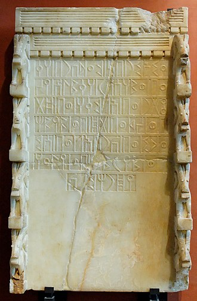
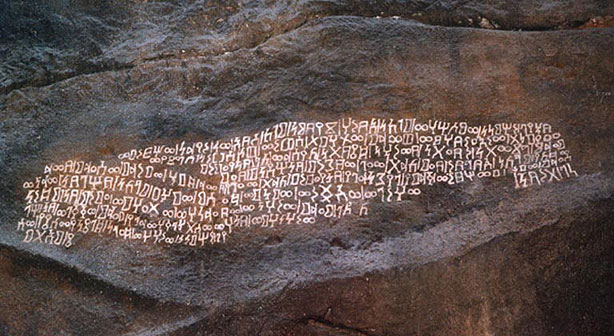
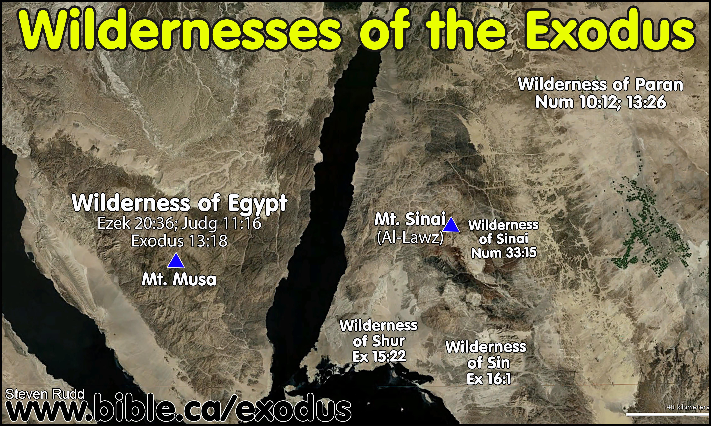

")
اس موضوع کی اہمیت یہ ہے کہ جو شخص بھی اسلام کا مطالعہ کرنا چاہتا ہے، “لازم” ہے کہ وہ اس کا “آغاز” یہاں سے کرے۔
پیغمبر محمد نے اپنے نئے مذہب کو تقویت دینے کے لیے جو کہانیاں بیان کیں، انکے مطابق:
- مکہ ابراہیم کے دور (یعنی 2000 سال قبل مسیح) سے آباد ہے۔
- اسمعیل کی اولاد پورے عرب میں پھیل گئی اور پورا عرب ہی توحید پرست اور “ابراہیمی اللہ” کا ماننے والا تھا، اور محمد کی آمد سے فقط 300 سال قبل وہ بت پرستی کی طرف مائل ہوئے۔
- مکہ عرب کا سب سے مشہور و معروف شہر تھا کیونکہ یہ اہم ترین تجارتی گذرگاہ پر واقع تھا، اور زمزم کے چشمے کی وجہ سے قافلے اور عرب خانہ بدوش یہاں پانی بھرنے آتے تھے۔
- اور پھر پورے عرب کے لیے مقدس ترین شہر تھا جہاں پورے عرب سے ہر سال لوگ حج کرنے آتے تھے۔ (بالکل ایسے ہی جیسے کہ آج کے دور میں بھی مکہ مقدس ہونے کی وجہ سے مسلمانوں میں سب سے مشہور و معروف ترین شہر ہے)۔
مگر جدید سائنس نے ان تمام مذہبی کہانیوں کو غلط ثابت کر ڈالا:
- عرب میں آثارِ قدیمہ کے بہت بڑے خزانے کی دریافت:
عرب کے علاقے میں بارشیں نہیں ہوتیں اور ہوا میں نمی نہیں، اس لیے چیزیں قدرتی طور پر محفوظ رہتی ہیں۔ جدید سائنس کی مدد سے آرکیالوجی کے ماہرین نے عرب کے ہر ہر شہر سے سینکڑوں اور ہزاروں کی تعداد میں آثارِ قدیمہ کے خزانے دریافت کیے ہیں۔ ان آثارِ قدیمہ میں بتوں کے مجسمے، تصاویر، چٹانوں اور پتھر کے کتبوں پر کندہ ہزاروں کی تعداد میں عبارات وغیرہ شامل ہیں۔ مگر حیرت کی انتہا اس وقت ہوئی جب آثارِ قدیمہ میں کہیں بھی مکہ کا وجود نظر آیا، اور نہ ہی توحیدی اللہ کا، نہ ابراہیم اور اسمعیل کا اور نہ ہی کسی ایک بھی توحیدی مسجد یا عبادتگاہ کا۔ بلکہ ان شہروں میں صرف صائبین کی عبادتگاہیں ، ان کے بت اور انکی تعلیمات وغیرہ نکلیں (جبکہ پیغمبر محمد کی کہانی کے مطابق پورا عرب ان کی ولادت سے 300 سال قبل تک مکمل طور پر توحید پرست تھا)۔ - عرب کی تاریخ کے متعلق روم کے قدیم مورخین کی کتب:
اگلا مسئلہ یہ پیدا ہوا کہ شمالی عرب رومی سلطنت کا حصہ رہا تھا اور قدیم رومن مورخین نے پورے عرب کے علاقے کے ہر ہر شہر کا ذکر ان کتابوں میں تفصیل سے کیا تھا۔ یہ کتابیں تفصیل سے تقریباً ہر ہر علاقے کی سلطنتوں اور ان میں موجود بادشاہوں کے خاندانی سلسلوں کا ذکر کر رہی ہیں۔ اسی طرح ہر علاقے میں موجود قبیلوں تک کا ذکر ان میں موجود ہے۔ چنانچہ حیرت کی انتہا اس وقت ہوئی جب جدید دور میں تاریخ دانوں کو ان کتابوں میں دور دور تک کسی مکہ نامی شہر کا وجود نہیں ملا، اور نہ ہی کسی بھی شہر میں کسی مسجد یا توحیدی اللہ، یا ابراہیم یا اسمعیل یا حج کرنے مکے جانے کا کوئی ذکر ملا۔ اور مکہ کے ساتھ ساتھ زمزم چشمے کا بھی کوئی ذکر موجود نہیں (حالانکہ پیغمبر محمد کی کہانی کے مطابق مکہ عرب کا سب سے اہم اور معروف ترین شہر تھا جہاں ہر سال حج کے لیے پورے عرب سے لوگ آتے تھے اور علاقے کے سارے بدو قبیلے یہاں اپنے جانوروں کو پانی پلانے آتے تھے، اور یہ اہم ترین تجارتی گذرگاہ پر موجود تھا جہاں سے سارے تجارتی قافلے گذرتے تھے)۔
آپ آج کے مسلمانوں کی حالت دیکھ سکتے ہیں جہاں انہوں نے ہر جگہ پر “بسم اللہ” اور دیگر اسلامی تحریریں کندہ کی ہوتی ہیں۔ چنانچہ ناممکن ہے کہ عرب میں بتوں کے ناموں کے تو ہزاروں کتبے اور تحریریں ہوں، مگر توحیدی اللہ، ابراہیم و اسمعیل اور مکہ اور زمزم اور حج کا ذکر سرے سے مفقود ہو۔
ان اسلامی کہانیوں کا آغاز یہاں سے ہوا کہ بائیبل نے ابراہیم کی جو کہانی بیان کی تھی، پیغمبر محمد نے اس میں رد و بدل کر کے اپنا کردار شامل کرنا چاہا۔
بائیبل کے مطابق:
- ابراہیم نے جب اپنی بیوی سارہ کے کہنے پر ہاجرہ اور اسمعیل کو شہر بدر کیا تو وہ دونوں بیئر سبع (موجودہ اسرائیل) کے بیابان میں تنہا بھٹکتے پھر تے رہے۔
- اسمعیل 16 سالہ لڑکے تھے۔بیئر سبع کے بیابان میں پیاس سے جب اسمعیل تھک گئے تو ہاجرہ نے انہیں ایک جھاڑی کے نیچے بٹھا دیا اور خود دور پہاڑ پر جا کر بیٹھ گئیں تاکہ بیٹے کو مرتا نہ دیکھ پائیں۔ اس وقت وہاں پانی کا ایک چشمہ نمودار ہوا۔
- ابراہیم نے اسمعیل کی نہیں، بلکہ اسحاق کو ذبح کر کے ان کی قربانی دینا چاہی تھی اور اس وقت دنبہ نمودار ہوا تھا۔
 اسمعیل کی نسل موجودہ اسرائیل کے جنوب سے لے کرجنوبی شام اور شمالی عرب سے ہوتے ہوئے عراق کے مغرب تک آباد ہوئی۔ یہ ایک سر سبز آباد علاقے پر مشتمل پٹی ہے جو کہ ہمیشہ سے آباد رہی ہے۔ آپ اس نقشے میں سرخ لکیر کی جو پٹی دیکھ رہے ہیں، تو یہ وہ علاقہ ہے کہ جہاں بائیبل کے مطابق اسمعیل کی اولاد آباد ہوئی تھی۔
اسمعیل کی نسل موجودہ اسرائیل کے جنوب سے لے کرجنوبی شام اور شمالی عرب سے ہوتے ہوئے عراق کے مغرب تک آباد ہوئی۔ یہ ایک سر سبز آباد علاقے پر مشتمل پٹی ہے جو کہ ہمیشہ سے آباد رہی ہے۔ آپ اس نقشے میں سرخ لکیر کی جو پٹی دیکھ رہے ہیں، تو یہ وہ علاقہ ہے کہ جہاں بائیبل کے مطابق اسمعیل کی اولاد آباد ہوئی تھی۔
جبکہ موجودہ مکہ وسطی مغربی عرب میں واقع ہے جو کہ مسیح کے زمانے تک مکمل طور پر بیابان اور غیر آباد علاقہ تھا۔- اسمعیل کی نسل خود کو یہودی ہی کہتے تھے، اسی بائیبل کو استعمال کرتے تھے۔ان میں اور دیگر یہودیوں میں کوئی فرق نہیں تھا۔ بعد میں اسمعیل اور اسحاق کی نسل کے یہودی یوں آپس میں گھل مل گئے کہ ان میں فرق کرنا ممکن نہیں رہا۔
جبکہ پیغمبر محمد کی تبدیل شدہ کہانی کے مطابق:
- آدم نے سب سے پہلے مکہ میں خانہ کعبہ بنایا اور اسے زمین پر اللہ کا پہلا گھر قرار دیا۔ پھر خانہ کعبہ کا نام و نشان مٹ گیا۔
- ابراہیم ہاجرہ اور اسمعیل کولے کر بیئر سبع (موجودہ اسرائیل) نہیں، بلکہ مکہ آئے اور پھر انہیں مکہ تنہا چھوڑ کر واپس گئے۔ وہاں آدم کے بنائے گئے کسی خانہ کعبہ کا وجود باقی نہ بچا تھا اور صرف بیابان تھا اور کوئی آبادی نہ تھی۔ اسلامی کہانیوں میں اس بات کی وجہ بیان نہیں کی گئی کیوں آدم کے بنائے ہوئے کعبہ کا نام و نشان مٹ گیا اور کیوں اللہ نے اسے آباد نہیں رکھا۔
- اسمعیل دودھ پیتے بچے تھے۔ انہوں نے پیاس سے رونا شروع کیا توہاجرہ نے صفا و مروہ نامی دو پہاڑوں کے چکر لگائے۔ پھر اسمعیل کے پاؤں سے پانی کا چشمہ جاری ہو گیا ۔ پھر عرب خانہ بدوش قبیلہ”بنی جرہم” وہاں سے گذرا تو پانی دیکھ کر وہاں آباد ہوگیا۔
- بعد میں ابراہیم دوبارہ مکہ آئے اور انہوں نے اسمعیل کی مدد سے خانہ کعبہ بنایا۔
- ابراہیم نےاسحاق کی نہیں، بلکہ اسمعیل کی قربانی دینا چاہی تو دنبہ نمودار ہوا۔
- اسمعیل کی اولاد پورے عرب میں پھیل گئی۔ وہ خود کو یہودی نہیں، بلکہ دین ابراہیمی کا پیروکار کہتی تھی۔
- پیغمبر محمد نے دعوی کیا کہ وہ خود بھی اسمعیل کی نسل سے ہیں۔
مگر پیغمبر محمد کے اپنے زمانے کے عربوں کو ان کہانیوں کا کچھ علم نہیں تھا۔ نہ تو انہیں آدم کا کچھ پتا تھا، نہ ابراہیم و اسمعیل و ہاجرہ کا، نہ ہی یہ علم تھا کہ وہ خود اسمعیل کی نسل سے ہیں۔ انہوں نے یہ دعوے پہلی مرتبہ پیغمبر محمد کی زبان سے ہی سنے۔
بائیبل بمقابلہ محمد: ۔۔۔ صحیح کون؟
چنانچہ اب سوال ہے کہ یہ فیصلہ کیسے کیا جائے کہ بائیبل اور محمد کے اس ٹکراؤ میں صحیح کون ہے اور غلط کون ہے؟
یا پھر یہ دونوں ہی غلط ہیں؟
یہاں جدید سائنسی تحقیق سامنے آئی، جس نے کم از کم محمد صاحب کے متعلق تو یہ ثابت کر دیا کہ بلا شک و شبہ پیغمبر محمد نے قدیم عرب کی تاریخ میں جو “مکہ” اور “ابراہیمی اللہ” کے وجود کے متعلق جو کہانیاں بیان کی ہیں، وہ ہرگز درست نہیں ہو سکتی ہیں۔
تحویل قبلہ۔۔۔ یہودیوں سے دشمنی کی ابتدا ۔۔۔ نئی کہانیوں کی ابتدا
چونکہ محمد صاحب اپنا نئے دین کو یہود و نصاری کے اللہ کا ہی تسلسل بتلا رہے تھے، اس لیے مکہ میں پہلی مرتبہ انہوں تحویل قبلہ کیا اور خانہ کعبہ کی جگہ بیت المقدس کی طرف منہ کر کے نماز پڑھنے کا حکم دیا۔ مدینہ پہنچ کی پہلے پہل محمد صاحب نے یہودیوں کی خوشنودی کے لیے اور بھی یہودی شریعت کے قوانین اپنائے۔ لیکن جلد ہی پیغمبر محمد کو مکمل ناکامی کا سامنا ہوا اور یہودیوں نے پیغمبر محمد کی نبوت کے دعوے کو قبول نہیں کیا، بلکہ انہیں جھوٹا نبی قرار دیتے رہے۔
چنانچہ وہیں سے یہودیوں سے دشمنی کا آغاز ہوا اور یہودیوں کے بیت المقدس کو بطورقبلہ ختم کروا دیا گیا اور دوسری مرتبہ تحویلِ قبلہ کرتے ہوئے خانہ کعبہ کو قبلہ مقرر کیا گیا۔
اس پر لوگوں نے سمجھ لیا کہ پیغمبر محمد کو غصہ چڑھا ہوا ہے کہ یہودی ان کو نبی تسلیم کیوں نہیں کر رہے اور اسی جرم کی پاداش میں قبلہ تبدیل کیا گیا ہے۔ چنانچہ اس پر پیغمبر محمد نے ان تنقید کرنے والوں کو قرآن میں 'بے وقوف' کہہ ڈالا۔ قرآن میں اس کا ذکر یوں ہے:
(سورۃ البقرہ، آیت 143 تا 146) :
بے وقوف لوگ کہیں گے کہ کس چیز نے مسلمانوں کو ان کے قبلہ (بیت المقدس) سے پھیر دیا جس پر وہ تھے ۔ ۔۔ تو تم پہلے جس قبلہ پر تھے ہم نے وہ اسی لئے مقرر کیا تھا کہ دیکھیں کون رسول کی پیروی کرتا ہے اور کون الٹے پاؤں پھر جاتا ہے ۔
چنانچہ لوگوں (بشمول مسلمانوں) کے ذہنوں میں سوال پیدا ہو گیا کہ یہ کیسا خدا ہے اور یہ کیسی اس کی حکمت ہے کہ پہلےخانہ کعبہ رخ کرواتا ہے، پھر تحویل قبلہ کروا کر بیت المقدس کو قبلہ مقرر کر دیتا ہے، پھر ڈیڑھ سال کے بعد یہودیوں سے ناراضگی پیدا ہونے پر اِسے خیال آتا ہے کہ رخ بیت المقدس کی طرف نہیں بلکہ خانہ کعبہ کی طرف کرنا ہے۔
لوگوں کے اس اعتراض کا جواب دینا قرآن کے خالق (یعنی پیغمبر محمد) کے لیے ممکن نہ تھا۔ چنانچہ ان لوگوں کو چپ کرانے کے لیے پیغمبر محمد نے ان لوگوں کو قرآن میں "بے وقوف" کہتے ہوئے مخاطب کیا ۔ پھر پیغمبر محمد نے عذر پیش کیا کہ اللہ کو دیکھنا تھا کہ کون الٹے پاؤں پھر جاتا ہے۔
یہ انتہائی عجیب عذر ہے کہ اللہ نے صرف کچھ لوگوں کا الٹے پاؤں پھرنا دیکھنے کے لیے 2 مرتبہ تحویلِ قبلہ کروا دیا۔ انتہائی دلچسپ بات یہ ہے کہ تاریخ میں کسی ایک شخص کا نام بھی نہیں ملتا جو تحویل کعبہ کی وجہ سے الٹے پاؤں پھرا ہو۔
چنانچہ یہ سوال ابھی تک مسلمانوں کے لیے قائم ہے کہ جب ایک فرد نے بھی تحویل قبلہ کی وجہ سے اسلام سے الٹے پاؤں نہیں پھرنا تھا، تو پھر اللہ کو 2 دفعہ قبلے تبدیل کروانے کے اہتمام کی کیا ضرورت تھی؟ صاف طور پر پتا چل رہا ہے کہ یہاں پیغمبر محمد نے اللہ کے نام پر یہودیوں سے اپنی پرسنل دشمنی نکالی ہے۔
بات صرف تحویل کعبہ تک نہیں رکی، بلکہ پیغمبر کو اب ہر صورت خود کو یہودیوں کے انبیاء سے زیادہ “بلند پایہ” ثابت کرنا تھا۔ چنانچہ یہیں سے دیگر کہانیاں بنائی گئیں کہ:
- ہاجرہ اور اسمعیل بیئر سبع (اسرائیل) نہیں بلکہ ابراہیم کے ساتھ مکہ آئے تھے۔
- اگلی کہانی یہ تھی کہ ابراہیم نےاسحاق کی نہیں بلکہ اسمعیل کی قربانی کی۔ اسمعیل کو ذبیح اللہ بنانےکا مقصد واضح تھا تاکہ انہیں اسحاق پر فضیلت دی جا سکے۔ اور پھر اپنی فضیلت بڑھانے کے لیے پیغمبر محمد نے دعویٰ کر دیا کہ وہ اسمعیل کی اولاد سے ہیں۔
یہ سب کہانیاں پیغمبر محمد نے مدینے آ کر تحویل قبلہ کے بعد شروع کیں۔
آدم کے بعد کعبہ کا نام و نشان کیوں مٹ گیا کہ ابراہیم کو دوبارہ کعبہ بنانا پڑا؟
پیغمبرِ اسلام کے لیے لازمی تھا کہ وہ خود کو اہل کتاب اور انکے انبیاء اور قبلے پر فوقیت دیں۔ اس لیے بعد میں پیغمبر اسلام نے تحویلِ کعبہ کے بعد دعویٰ کر دیا کہ خانہ کعبہ کو اس لیے بیت المقدس پر فضیلت ہے کیونکہ ابراہیم اور اسمعیل نے اسے بیت المقدس سے پہلے بنایا۔ بلکہ خانہ کعبہ کو مزید فضیلت دینے کے لیے دعویٰ کر دیا گیا کہ خانہ کعبہ زمین پر اللہ کا پہلا گھر تھا جسے سب سے پہلے آدم نے بنایا (سورۃ آل عمران، آیت 93)۔ یاد رہے کہ مکہ کے 13 سالوں میں محمد صاحب نے یہ نہیں بتایا کہ کعبہ زمین پر اللہ کا پہلا گھر تھا، بلکہ مدینہ ہجرت کرنے اور اس کے بعد یہودیوں سے جھگڑے، اور پھر تحویل قبلہ کے وقت قرآن کے مصنف (یعنی محمد صاحب) کو یہ بتانا یاد آیا کہ خانہ کعبہ زمین پر اللہ کا پہلا گھر تھا، تاکہ بیت المقدس پر اس کی فضیلت ثابت کی جائے۔ (دیکھئے مودودی صاحب کی تفہیم القرآن سورۃ آل عمران کے زمانہ نزول کے متعلق)۔
چلیں قرآن کے مصنف (یعنی محمد صاحب) نے دعویٰ کر دیا کہ کعبہ زمین پر اللہ کا پہلا گھر تھا، مگر پھر یہ وجہ بیان نہیں کی گئی کہ آدم کے بعد اللہ کا یہ پہلا گھر برباد و ویران کیوں ہو گیا، اس کا نام و نشان تک کیوں مٹ گیا؟ کیوں ابراہیم کو دور دور تک کعبہ کی موجودگی کا علم نہیں تھا جب وہ ہاجرہ اور اسمعیل کو لے کر اس صحرا میں پہنچے؟ کیوں ابراہیم کو دوبارہ کعبہ بنانا پڑا؟ اور کیوں اللہ نے اپنے پہلے اور مقدس ترین گھر کی حفاظت نہیں کی؟
آپ مسلمانوں سے لاکھ پوچھ لیجئے، مگر وہ کبھی آپ کوقرآن و سنت سے اس کا جواب نہیں دیں گے، بلکہ اپنی طرف سے آئیں بائیں شائیں کرتے رہیں گے۔
ابراہیم کے بعد آنے والے بے تحاشہ انبیاء اور پوری بنی اسرائیل ہر سال مکہ حج کے لیے کیوں نہ آئے؟
قرآن کے مصنف (یعنی محمد صاحب) نے آگے دعویٰ کر دیا کہ جب ابراہیم نے کعبہ بنا لیا تو اللہ نے انہیں حکم دیا کہ وہ دنیا کے تمام لوگوں کو حج پر آنے کی دعوت دیں۔
(سورۃ الحج، آیات 26 تا 27) اور (وہ وقت یاد کیجئے) جب ہم نے ابراہیم کے لئے کعبہ کی جگہ کا تعین کر دیا (اور انہیں حکم فرمایا) کہ میرے ساتھ کسی چیز کو شریک نہ ٹھہرانا اور میرے گھر کو طواف کرنے والوں اور قیام کرنے والوں اور رکوع کر نے والوں اور سجود کرنے والوں کے لئے پاک و صاف رکھنا۔ اور تم لوگوں میں حج کا بلند آواز سے اعلان کرو وہ تمہارے پاس پیدل اور تمام دبلے اونٹوں پر (سوار) حاضر ہو جائیں گے جو دور دراز کے راستوں سے آتے ہیں
اس حکم کے مطابق ابراہیم کے بعد آنے والے بے تحاشہ انبیاء اور پوری بنی اسرائیل پر ہر سال مکہ آ کر کعبہ کا حج کرنا فرض ہو چکا تھا۔ مگر بائیبل ہو، یا پھر یہود و نصاری کی طرف سے لکھی گئی تاریخ کے سینکڑوں دیگر کتب، یا پھر رومن ایمپائر کے مؤرخین کی طرف سے یہود و نصاری کی تاریخ پر لکھی گئی قدیم کتب، کہیں بھی کسی ایک بھی نبی یا پھر بنی اسرائیل کے ہر سال مکہ حج کے لیے آنے کا دور دور تک کوئی ذکر موجود نہیں۔
اور تو اور خود قرآن اور لاکھوں حدیثوں کے مجموعے میں نہ تو اسحاق کے کبھی مکہ حج پر آنے کا ذکر ہے، اور نہ ہی دیگر کسی انبیاء کا ، اور نہ ہی پوری بنی اسرائیل کی امت کا۔
اور تو اور خود قریش اور اہل مکہ کو دور دور تک اپنی تاریخ میں کبھی بھی یہود و نصاریٰ کے متعلق علم ہی نہیں کہ وہ کعبے کے حج کے لیے ہر سال مکہ آتے تھے۔
مسلم عذر : اسلام کے خلاف "منظم پرفیکٹ عالمی سازش" کرتے ہوئے زمانہ قدیم کی سلطنتوں نے مکہ اورابراہیم اور حج کے تمام ثبوت مٹا دیے
جدید زمانے کے اسلام عذر خواہ بھی ایک ڈھیٹ ہیں۔ کھدائی کے دوران عرب کے ہر ہر قدیم شہر سے سینکڑوں اور ہزاروں کی تعداد میں آثارِ قدیمہ برآمد ہوئے۔ ان کے متعلق اسلام عذر خواہوں کے پیشکردہ بہانوں کو جمع کیا جائے تو مجموعی صورتحال کچھ یوں بنتی ہے:
- یہودیوں، عیسائیوں، رومن ایمپائر اور صائبین کو علم تھا کہ مستقبل میں محمد صاحب پیدا ہو کر ان کے مذاہب کو ختم کرنے والے ہیں۔ چنانچہ انہوں نے محمد صاحب کی پیدائش سے قبل ہی آپس میں مل کر محمد اور اسلام کے خلاف ایک عظیم، منظم اور پرفیکٹ عالمی سطح کی سازش تیار کی۔
- اس عظیم سازش کے تحت پورے کے پورے عالم یہود اور پورے کے پورے عالمِ عیسائیت نے (یعنی جتنے بھی ممالک میں یہود و نصاری موجود تھے)نے مل کر تمام کے تمام توریت اور بائیبل کے نسخوں میں تحریف کی، اور ان میں سے ابراہیم اور ان کے بعد آنے والے انبیاء اور پوری یہودی و نصاری امت کے ہر سال حج کے لیے مکہ جانے اور ہر سال لاکھوں جانوروں کی قربانیاں کرنے کا ذکر بھی توریت اور بائیبل سے نکال دیا گیا۔
- اور یہ تحریف صرف توریت اور بائیبل تک ہی محدود نہ رہی، بلکہ عالم یہود اور عالم نصاریٰ میں توریت اور بائیبل کے علاوہ بھی دیگر سینکڑوں تاریخی کتب لکھی گئی تھیں، تو ان سب کی سب تاریخی کتب میں بھی تحریف کرتے ہوئے ان میں سے ابراہیم اور دیگر انبیاء اور پوری یہودی اور نصاریٰ امت کے ہر سال حج کے لیے مکہ جانے کے ذکر کو غائب کر دیا گیا۔
- توریت، انجیل اور دیگر کتب کے بعد آثارِ قدیمہ کی باری آئی۔ پورے کے پورے عالم یہود اور عالم نصاریٰ میں جتنے آثارِ قدیمہ پائے جاتے تھے (چٹانوں اور پتھروں پر کندہ تحریریں وغیرہ) جو کہ مکہ میں کعبے کے حج اور ہر سال جانوروں کے ذبح کرنے کے متعلق تھیں، ان سب آثارِ قدیمہ کو تباہ کر دیا گیا تاکہ مستقبل میں آنے والے محمد صاحب اور اسلام پر کو جھوٹا ثابت کیا جا سکے۔
- پھر قدیم رومن ایمپائر بھی اس سازش میں منظم طریقے سے عالمِ یہود اور عالمِ نصاریٰ کے ساتھ شامل ہو گیا اور جتنے بھی قدیم رومی اور یونانی مؤرخین عرب کی تاریخ کو جمع کر رہے تھے، انہوں نے بھی مکہ اور حج اور ہر سال لاکھوں جانوروں کی قربانی کا ذکر سازش کے تحت حذف کر دیا۔
- اسلام عذر خواہوں کے مطابق محمد صاحب کی پیدائش سے 300 سال قبل عرب کے لوگ توحید پرست اور دین ابراہیمی کے پیروکار تھے۔ مگر اس کے بعد ہی عرب کے لوگوں میں بدعات پیدا ہوئیں اور انہوں نے توحیدی اللہ کو چھوڑ کر ستاروں اور بتوں کی عبادت شروع کر دی اور صابی بن گئے (اسلامی ریفرنسز آگے اسی آرٹیکل میں ملاحظہ فرمائیں)۔ اور صابی بنتے ہی وہ یہود اور نصاریٰ اور رومن ایمپائر کی اس عالمی سازش کا حصہ بھی بن گئے اور انہوں نے پورے عرب سے اللہ، ابراہیم، مکہ اور حج اور قربانی کے ذکر کو مکمل طور پر مٹا ڈالا اور ان کے متعلق کوئی کتاب اور کوئی آثارِ قدیمہ تباہ کیے بغیر نہیں چھوڑا، اور ایسی تمام چٹانوں اور پتھروں پر کندہ تحریریں مٹا ڈالیں، اور ہر شہر میں موجود دینِ ابراہیمی کی عبادتگاہیں تباہ کر ڈالیں۔
- صائبین نے فقط دین ابراہیمی اور کعبہ اور حج کے متعلق آثارِ قدیمہ کو ہی تباہ نہیں کیا، بلکہ اس کے بعد انہوں نے چٹانوں اور پتھرؤں پر صابی مذہب کے مطابق نئی عبارتیں کندہ کروائیں، دین ابراہیم کی مسجدیں ڈھا کر ان کی جگہ صابی عبادتگاہیں بنائیں ۔۔۔ اور انہوں نے یہ سب کچھ اس لیے کیا کیونکہ انہیں بھی علم تھا کہ مستقبل میں محمد صاحب پیدا ہونے والےہیں اور انہیں اس پرفیکٹ سازش کے ذریعے محمد صاحب اور اسلام کا راستہ روکنا تھا۔
کیا کوئی بھی ذی الشعور شخص، کبھی بھی مسلمانوں کی اس "عظیم پرفیکٹ سازشی تھیوری" پر ایمان لا سکتا ہے؟
ذبیح اللہ کون؟ اسمعیل یا پھر اسحاق؟
محمد صاحب نے بائیبل کی کہانی کے مطابق یہی کہا تھا کہ ذبیح اللہ اسحاق تھے۔ مگر بعد میں آنے والے مسلمانوں کے چھکے تب چھوٹے جب بعد میں یہ سوال کھڑا ہو گیا کہ اسحاق تو کبھی مکہ آئے ہی نہیں تھے، تو پھر ابراہیم نے مکہ میں موجود خانہ کعبہ میں، حج کے دن کیسے اسحاق کو ذبح کر دیا؟
امام قرطبی قرآنی آیت 37:102 کی تفسیر میں لکھتے ہیں (لنک):
علمائے نے اس بارے میں اختلاف کیا ہے کہ کس کے ذبح کا حکم دیا گیا تھا ؟ اکثر کی رائے یہ ہے اس سے مراد اسحاق (علیہ السلام) ہیں ۔ یہ قول جنہوں نے کیا ان مین حضرت عباس بن المطلب ‘ ان کے بیٹے حضرت عبداللہ ہیں ۔ حضرت عبداللہ ابن عباس سے صحیح یہی ہے ۔ ثوری اور ابن جریج حضرت ابن عباس کی طرف منسوب کرتے ہیں کہا : ذبیح حضرت اسحاق (علیہ السلام) ہیں ۔ حضرت عبداللہ بن مسعود سے بھی یہی منقول ہے ایک آدمی نے آپ کو مخاطب کرتے ہوئے سنا : یابن الاشیاخ الکرام تو حضرت عبداللہ نے جواب میں کہا : وہ حضرت یوسف بن یعقوب بن اسحاق ذبیح اللہ بن ابراہیم خلیل اللہ علیہم الصلوۃ والسلام ہیں ۔ حماد بن زید نبی کریم (صلی اللہ علیہ وآلہ وسلم) سے مرفوع روایت نقل کرتے ہیں فرمایا : ان الکریم بن الکریم بن الکریم ابن الکریم یوسف بن یعقوب بن اسحاق بن ابراہیم علیہم السلام ہیں ‘‘ (3) ۔ یعنی کریم بن کریم بن کریم بن کریم حضرت یوسف ‘ حضرت یعقوب ‘ حضرت اسحاق اور حضرت ابراہیم (علیہ السلام) ہیں ۔ ابو زبیرنے حضرت جابر (رض) سے روایت نقل کی ہے کہ ذبیح حضرت اسحاق (علیہ السلام) ہیں ‘ یہی قول حضرت علی (رض) سے بھی مروی ہے ۔ حضرت عبداللہ بن عمر رضی اللہ عنہما سے بھی یہ مروی ہے کہ ذبیح حضراسحاق (علیہ السلام) ہیں ۔ حضرت عمر (رض) کا قول بھی یہی ہے ۔ یہ سات صحابہ ہیں ۔ تابعین اور دوسرے علماء نے بھی یہ قول کیا ہے جن میں علقمہ ‘ شعبی ‘ مجاہد ‘ سعید بن جبیر ‘ کعب الاحبار ‘ قتادہ مسروق ‘ عکرمہ ‘ قاسم بن ابی بزہ ‘ عطا ‘ مقاتل ‘ عبدالرحمن بن سابط ‘ زہری ‘ سدی ‘ عبداللہ بن ہزیل اور امام مالک بن انس ہیں سب نے کہا : ذبیح حضرت اسحاق (علیہ السلام) ہیں ‘ یہی نقطہ نظر اہل کتاب یعنی یہود و نصاری کا ہے ۔ کئی علماء نے اسی کو اختیار کیا ان میں حضرت نحاس ‘ طبری اور دوسرے علماء ہیں ۔
دوسرے علماء نے کہا : ذبیح حضرت اسماعیل (علیہ السلام) ہیں جن علماء نے یہ بات کہی ان میں حضرت ابوہریرہ ‘ حضرت ابو طفیل عامر بن واثلہ ہیں یہی قول حضرت عمر اور حضرت ابن عباس سے مروی ہے تابعین میں سے سعید بن مسیب ‘ شعبی یوسف بن مہران ‘ مجاہد ‘ ربیع بن انس ‘ محمد بن کعب قرظی ‘ کلبی اور علقمہ سے مروی ہے ۔ پہلی تعبیر (یعنی اسحاق کا ذبیح اللہ ہونا) نبی کریم، صحابہ کرام اور تابعین سے بہت زیادہ سندوں کے ساتھ منقول ہے ۔
131 روایات اسحاق کو ذبیح اللہ بتاتی ہیں، مگر پھر حدیث فیکٹری نے انکی تکذیب کیلئے 134 روایات گھڑیں کہ اسحاق نہیں بلکہ اسمعیل ذبیح اللہ تھے (لنک 1اور لنک2)۔ یہ پکا ثبوت ہے اس بات کا کہ یہ روایات مسلمانوں کے اپنے گھر کی لونڈیاں تھیں کہ جنہیں دین کی عظمت کی خاطر وہ جیسا چاہتے تھے ویسے ہی گھڑ لیتے تھے ۔
جھوٹ کی نشانی ہے کہ جہاں جھوٹ ہوتا ہے، وہاں ایسے ہی تضادات کھڑے ہو جاتے ہیں۔
مسلمانوں کو ان سوالات پر سوچنا چاہیے کہ:
-
کعبے کا کوئی ذکر بائیبل میں کیوں موجود نہیں ہے؟ اگر ابراہیم بے تحاشہ مرتبہ مکہ گئے ہوتے تو یقینی طور پر اس کا ذکر بائیبل میں ہوتا۔ مگر پیغمبر محمد سے قبل کی بائیبل کے جتنے نسخے ہیں، ان میں کہیں کسی مکہ یا خانہ کعبہ کا ذکر نہیں۔ یہود و نصاریٰ کے پاس صرف بائیبل نامی کتاب ہی موجود نہیں تھی، بلکہ سینکڑوں ہزاروں دیگر تاریخی کتب بھی لکھی گئیں،سینکڑوں اور ہزاروں دیگر آثارِ قدیمہ چٹانوں اور پتھروں پر کندہ تحریروں کی صورت میں موجود ہیں مگر کسی کتاب میں اور یہود و نصاری کے کسی بھی آثارِ قدیمہ میں بھی مکہ کا ذکر ہے اور نہ وہاں لوگوں کے حج کے لیے جانے کا۔
-
ابراہیم کے بعد بنی اسرائیل میں بے تحاشہ انبیاء گذرے، مگر ان انبیاء میں سے کسی نے بھی عید الاضحی کیوں نہ منائی، اور کیوں ہر سال اس موقع پر جانوروں کی قربانی نہیں کی؟ کیوں ان انبیاء کے مکہ جانے، حج کرنے اور قربانی دینے کا ذکر بائیبل، یا پھر بائیبل کے علاوہ اہل کتاب کی دیگر کسی بھی تاریخ کی کتاب یا یہود و نصاریٰ کے آثارِ قدیمہ میں موجود نہیں؟
- عربوں کی پرانی شاعری اور پرانے قصے (جو مسلمانوں کی روایات کی کتب میں درج ہیں)، ان میں بھی کہیں ابراہیم اور اسمعیل اور ہاجرہ کا ذکر کیوں نہیں ملتا؟
- اور پیغمبر محمد سے پہلے عرب قبائل کو یہ علم کیوں نہیں تھا کہ وہ اسمعیل کی اولاد میں سے ہیں؟
- کہا جاتا ہے کہ عربوں کا حافظہ بہت تیز تھا اور وہ اپنے پچھلےسو سو نسلوں کے نام یاد رکھتے تھے۔جبکہ پیغمبر محمد نے تو 40 پشتوں کےبعد ہی اپنا تعلق اسمعیل سے جوڑ لیا تھا، مگر دیگر عربوں کو اپنے نسب میں پھر اسمعیل اور ابراہیم کیوں نہ مل سکے؟
- ٭پیغمبر کے ہم عصر ہزاروں لاکھوں عربوں میں سے کسی ایک کو بھی علم نہیں تھا کہ 300 سال قبل تک ان کے اباؤ اجداد دین ابراہیمی کے پیروکار تھے۔
چنانچہ:
- بائیبل بھی اسلامی کہانی کو غلط ثابت کر رہی ہے۔
- پیغمبر محمد کے زمانے کے عرب بھی ان اسلامی کہانیوں کو جھٹلاتے رہے اور کسی کو علم نہیں کہ وہ اسمعیل کے اولاد سے تھے۔ نہ ہی انہیں یاد کہ 300 سال قبل تک ان کے آباؤ اجداد دین ابراہیم نامی کسی شے کی پیروی کرتے رہے۔
- جدید سائنس آرکیالوجی اور تاریخی کتب کی روشنی میں ان اسلامی کہانیوں کو غلط ثابت کر رہی ہے۔
اس سائنسی تحقیق کو پڑھنے کے بعد 1٪ شک و شبہ باقی نہیں بچتا کہ مکہ اورابراہیم اور کعبہ کے متعلق یہ کہانیاں پہلی مرتبہ پیغمبر محمد نے بیان کیں۔
محمد صاحب نے کعبہ اور حج کی رسومات کو اسلامی شریعت کا حصہ کیوں بنایا؟
- اب پہلا مسئلہ یہ تھا کہ کعبہ اور حج کی مشرکین عرب میں بہت زیادہ سیاسی اہمیت تھی اور اس لیے محمد صاحب اس کو بھی اسلام کا حصہ بنانا چاہتے تھے۔
- پھر دوسرا مسئلہ یہ تھا کہ محمد صاحب اپنی مکی زندگی میں کعبہ کی اہمیت کو مان چکے تھے اور وہاں نمازیں پڑھتے تھے، اور کعبہ کا طواف بھی کرتے تھے۔
- اور پھر تیسرا مسئلہ یہ تھا کہ جب یہودیوں سے مدینہ میں اختلافات شروع ہوئے، تو اس وقت محمد صاحب نے تحویلِ قبلہ کروا کر کعبہ کو ایک بار پھر اللہ کا پہلا گھر بنا دیا تھا، اور سب مسلمان کعبے کی طرف منہ کر کے نماز ادا کرتے تھے۔
- اور پھر محمد صاحب نے قرآن میں دعویٰ کر دیا تھا کہ آدم نے زمین پر آنے کے بعد اللہ کے لیے پہلا گھر کعبہ بنایا تھا۔
- اس سلسلے کی پہلی کہانی محمد صاحب نے یہ بیان کی کہ محمد اور قریش ابراہیم اور اسمعیل کی نسل سے تھے (حالانکہ قریش اور عرب کو نہ ابراہیم کا پتا تھا اور نہ اسمعیل کا اور نہ اپنے آپ کا ان کی نسل سے ہونے کا پتا تھا، بلکہ محمد صاحب پہلے شخص تھے جو کہ قریش کو ان کا نسب بتلا رہے تھے جس میں وہ ابراہیم و اسمعیل کی نسل سے نکل رہے تھے)۔
- اگلی کہانی محمد صاحب نے یہ بیان کی کہ ابراہیم نے اسمعیل اور ہاجرہ کے ساتھ مکہ کا سفر کیا تھا اور وہاں اسمعیل کے پاؤں مارنے کی وجہ سے زمزم کا چشمہ برآمد ہوا۔ جبکہ اس سے قبل قریش کو نہ اسمعیل کے آنے کی خبر تھی اور نہ زمزم کے یوں پھوٹنے کی، بلکہ خود اسلامی روایات کے مطابق زمزم کا چشمہ پہلی مرتبہ عبدالمطلب نے چالیس یا پچاس سال پہلے ہی کھود کر دریافت کیا تھا (یہ روایت آگے ہم اس آرٹیکل میں پیش کریں گے)۔
- اگلی کہانی یہ تھی کہ ابراہیم اور اسمعیل نے اس وقت کعبہ کی بنیاد رکھی (مگر محمد صاحب نے اس سوال کا جواب نہیں دیا کہ پہلا دعویٰ قران میں یہ تھا کہ آدم نے زمین پر آنے کے بعد اللہ کا پہلا گھر کعبہ کی بنیاد رکھی تھی، تو پھر ابراہیم کو دوبارہ بنیاد رکھنے کی ضرورت کیوں پیش آئی؟ اور آدم کا بنایا ہوا کعبہ برباد کیوں ہوا اور کیوں اس کا نام و نشان مٹ گیا؟ یعنی جب ابراہیم اسمعیل اور ہاجرہ کو لے کر اس علاقے میں آئے تو زمین پر اللہ کے پہلے گھر کعبہ کا نام و نشان تک وہاں موجود نہیں تھا۔
- خانہ کعبہ کے طواف کو بھی محمد صاحب نے جاری رکھا اور اس کے متعلق وہ کوئی اسلامی کہانی وضع کر کے اسے کسی یہودی کہانی سے نہیں جوڑ سکے کہ خانہ کعبہ کے گرد یہ چکر کیوں لگائے جاتے ہیں۔ طواف کا تعلق صائبین کی رسم سے تھا۔ طواف کی یہ رسم سورج کے گرد سیاّروں کی گردش سے لی گئ تھی۔ صائبین سورج کے گرد چکر لگانے والے سیاّروں کی تعداد سات مانتے تھے لہذٰا عرب کعبے کے گرد سات ہی چکر لگایا کرتے تھے۔ اس وجہ سے محمد صاحب طواف کو کسی یہودی کہانی سے نہ جوڑ پائے۔
- محمد صاحب نے حج پر قربانی کی رسم کو بھی جاری رکھا اور اس کو یہودی کہانی سے جوڑ دیا کہ جہاں ابراہیم نے جب اسحاق کی قربانی دینی چاہی تو اللہ نے بھیڑ بھیج دیا۔
- مگر مسئلہ یہ ہوا کہ محمد صاحب کی یہ اسحاق کی قربانی والی یہ کہانی اتنی پرفیکٹ نہیں تھی کیونکہ یہود و نصاری نے کبھی سالانہ بنیادوں پر جانوروں کو اللہ کے لیے ذبح نہیں کیا تھا۔ چنانچہ یہ سوال برقرار تھا کہ جب یہود و نصاری کوئی قربانی نہیں کرتے، تو پھر حج میں یہ قربانی کی رسم کہاں سے آ گئی؟ پھر دوسرا مسئلہ یہ تھا کہ اسحاق کبھی مکہ آئے ہی نہیں تھے ۔ چنانچہ ان سوال سے بچنے کے لیے بعد میں آنے والے مسلمانوں نے قربانی کی اس اسلامی کہانی میں مزید تحریف کی اور اسحاق کو اس میں سے نکال کر اسمعیل کو ذبیح اللہ بنا دیا۔
آرکیالوجیکل ثبوت: “مکہ” اور “ابراہیمی اللہ” کا قدیم عرب میں کوئی وجود نہیں
عرب کے کئی مقامات سے قدیم آثار کا بہت بڑا خزانہ دریافت ہوا ہے۔ ان قدیم آثار (آرکیالوجی) سے ثابت ہے کہ مسیح (حضرت عیسی) کی پیدائش تک مکہ کا کوئی وجود نہیں تھا۔ مسیح کا دور پیغمبر محمد سے 600 سال قبل کا تھا۔ جبکہ ابراہیم مسیح سے بھی 2000 سال قبل آئے۔
مثلا ہزاروں کی تعداد میں پتھر کے کتبوں اور چٹانوں پر کندہ تحریریں ملی ہیں جو کہ مسیح کے دور سے بھی کئی سو سال پرانی ہیں، مگر ان ہزاروں کندہ شدہ تحریروں میں نہ تو مکہ کا ذکر ہے، اور نہ ہی پورے عرب کے کسی ایک بھی شہر میں کسی بھی توحیدی اللہ، ابراہیم، اسمعیل جیسے انبیاء یا مسجد وغیرہ کے متعلق ایک لفظ بھی ملتا ہے۔
پتھر کے کتبے پر لکھی تحریر (inscription) جو کہ 700 سال قبل مسیح کی ہے اور یمن کے علاقے سے برآمد ہوئی ہے (تفصیلات وکیپیڈیا پر)۔

چٹان پر کندہ شدہ تحریر جو کہ السبئيون سے تعلق رکھتی ہے۔

اسلام کا دعویٰ ہے کہ مکہ ایک قدیم شہر ہے جو کہ ابراہیم کے زمانے میں وجود میں آیا (یعنی تقریبا دو ہزار سال قبل مسیح)۔ اور یہ عرب کا سب سے زیادہ معروف ترین شہر تھا کیونکہ ہر سال پورے عرب سے لوگ یہاں حج کرنے آتے۔ نیز یہ اہم ترین تجارتی گذرگاہ پر واقع تھا۔
لیکن اس اسلامی دعوے کے خلاف بہت بڑا ثبوت یہ ہے کہ:
- مکہ میں پتھروں کے کتبوں یا چٹانوں پر کندہ کی گئی تحریر یا نقش نگاری، یادگار و مقبرہ یا کسی بھی قسم کا کوئی ایک بھی قدیم آثار نہیں ملتا۔ جبکہ عرب کے قدیم شہروں اور مملکتوں کے آثار کا بہت بڑا خزانہ آج بھی پتھر کی تختیوں (inscriptions) اور چٹانوں پر کندہ کی گئی تحریروں اورنقش نگاری، عبادت گاہوں و مقبروں یا دیگر آرکیالوجیکل دستاویزات کی صورت میں محفوظ ہے۔
- دیگر شہروں میں ملنے والے یہ آثار قدیمہ اتنی بہتات میں ہیں کہ انکی مدد سے ماہرین آثار قدیمہ اس قابل تھے کہ وہ ان علاقوں کے بادشاہوں اور شہروں کا مکمل ریکارڈ ترتیب دے سکیں۔
- یہاں سے ہی ماہرین کے پاس ان جنگوں کے متعلق بھی معلومات کا خزانہ ہاتھ آیا جو کہ اس علاقے کے مختلف شہروں کے مابین لڑی گئی تھیں، اور کون کون سے شہر عرب میں موجود تھے۔
- یہاں سے ہی ماہرین کے پاس معلومات آئیں کہ کون کون سے علاقے میں کون کون سے عبادتگاہیں موجود تھیں، اور کون کون سے بتوں اور ستاروں وغیرہ کی وہاں عبادت کی جاتی تھی۔
لیکن اتنے وسیع معلوماتی خزانے کے باوجود، ان قدیم آثار میں دور دور تک کسی بھی مکہ نامی شہر کا کوئی وجود نہیں ملتا اور نہ ہی عربوں کے وہاں حج پر جانے کا ذکر ہے، اور نہ ہی پورے عرب میں کسی توحیدی اللہ، آدم، نوح و ابراہیم و اسمعیل وغیرہ کے متعلق ایک بھی لفظ ملتا ہے۔
اگر مکہ کا واقعی عیسیٰ سے قبل کے زمانے میں کوئی وجود ہوتا ، تو یقینی طور پر مکہ کے متعلق آس پاس کے شہروں کے مقابلے میں کہیں زیادہ قدیم آثار ملنا چاہیے تھے کیونکہ اسلام کے مطابق عرب اسمعیل کی اولاد سے تھے، جو کہ ہر سال حج کے لیے مکہ جاتے تھے، اور مکہ تجارتی راستے پر واقع تھا۔ لیکن یہاں صورتحال یہ ہے کہ مکہ کے متعلق تو قدیم آثار صفر ہیں، جبکہ تجارتی گذرگاہ پر واقع مکہ کے شمال و جنوب کے شہروں کے متعلق قدیم آثار کی بہتات ہے جن کی تعداد ہزاروں میں ہے۔
مزید دلچسپ بات یہ ہے کہ مکہ جس تجارتی راستے پر واقع تھا، تو اس تجارتی راستے پر واقع عرب مملکتوں کا ذکر عیسیٰ سے کئی صدیوں قبل کے تاریخی ریکارڈ میں موجود ہے۔ مکہ اس مشہور تجارتی راستے پر موجود دو مشہور شہروں Qedar مملکت قیدار اور Dedan العلا کے درمیان واقع ہے۔ یہ تجارتی راستہ بحر احمر، یعنی Red See کے متوازی چلتا ہے۔
السبئيون کا علاقہ جنوب مغربی عرب میں واقع ہے، اور ماہرینِ آثارِ قدیمہ کے مطابق اس علاقے کے لوگوں نے “تحریری دستاویزات” 1000 سال قبل از مسیح لکھنا شروع کر دی تھیں[لنک]۔تمام وسطی ایشیائی تہذیبوں میں یمن کے علاقے میں پتھروں اور چٹانوں پر کندہ کی گئی تحریروں کی سب سے زیادہ بہتات موجود ہے۔ان کندہ کی گئی تحریروں کی تعداد ہزاروں میں ہے۔ ماہرین آثار قدیمہ ان ہزاروں کندہ کی گئی تحریروں کو پڑھنے کے باوجود دور دور تک کسی مکہ کے وجود کو نہ ڈھونڈ پائے، نہ حج کو، نہ ابراہیم کے کسی توحیدی مذہب کے وجود کو۔
یہ کندہ کی گئی تحریریں اس وجہ سے تباہ ہونے سے بچ گئیں کیونکہ یمن کے اس علاقے میں بقیہ دنیا کی بہ نسبت بہت کم بارش ہوتی ہے۔ جبکہ مکہ میں تو یمن کے بھی مقابلے میں 10 گنا کم بارش ہوتی ہے۔ چنانچہ اگر قدیم مکہ کا واقعی کوئی وجود ہوتا، تو یہ تحریریں بارشیں نہ ہونے کی وجہ سے یمن سے بھی زیادہ تعداد میں محفوظ رہتیں۔ مگر ادھر حالت یہ ہے کہ مکہ میں ایسے قدیم آثار کی تعداد “صفر” ہے۔
اسی طرح اس تجارتی راستے پر مکہ کے شمال میں کئی شہروں میں یہ پتھروں اور چٹانوں پر کندہ کی گئی تحریریں ملتی ہیں جو کہ تفصیل سے ان خاندانوں کا ذکر کرتی ہیں جنہوں نے ان علاقوں پر حکمرانی کی۔ مثلاً Dedan العلا اور Teima تیماء نامی شہر اس تجارتی راستے پر مکہ کے شمال میں واقع ہیں۔ ان شہروں میں موجود یادگاری مقبرے، چٹانوں و پتھروں پر موجود کندہ تحریریں اور نقش نگاری سے ہمیں 800 سال قبل از مسیح تک کے آثار تفصیل سے ملتے ہیں۔
لیکن تجارتی راستے پر ان تینوں شہروں کے درمیان واقع ہونے کے باوجود کسی بھی تحریر میں مکہ کا ذکر ہے اور نہ ابراہیم کا اورنہ ہی حج کا، اور نہ ہی کسی ابراہیمی اللہ کے کسی توحیدی مذہب کا۔
ہمیں آج ان دیگر عرب شہروں میں موجود بادشاہوں کے سلسلے کے نام ترتیب سے ملتے ہیں جو کہ ان ہزاروں کندہ شدہ تحریروں میں موجود ہیں۔ انہیں K. A. Kitchen اور Von Wissmann اور دیگر بہت سے ماہرین نے ترتیب دیا ہے۔ یہ ریکارڈ 1000 سال قبل عیسوی سے لے کر بعد از عیسیٰ کئی صدیوں تک تقریباً مسلسل موجود ہیں۔
شمالی عرب: Thamud ثمود، Lihyan لحیان اور Nabataeans الانباط
یہ وہ شہر ہیں جو کہ موجودہ مکہ کے شمال میں واقع تھے۔
ثمود:
- ثمود کے آثار 800 سال قبل مسیح سے شروع ہوتے ہیں اور 500 سال بعد از مسیح تک مسلسل ملتے ہیں۔
- پتھروں کے کتبوں پر کندہ تحریروں کی تعداد “کئی ہزاروں” میں ہے۔
- بقیہ عرب کے شہروں کے آثارِ قدیمہ میں بے تحاشہ ایسی تحریریں ہیں جہاں ثمودکے قبیلے، ان کے خداوؤں اور انکی جنگوں کا ذکر ہے، مگر کہیں بھی مکہ کا ذکر ملتا ہے اور نہ ہی کسی ابراہیمی توحیدی اللہ کا، اور نہ حج کا۔
لحیان:
- لحیان کے بادشاہوں کے سلسلے کی پوری ڈاکومینٹیشن موجود ہے جو کہ 330 سال قبل مسیح سے شروع ہوتے ہیں۔
- یہاں موجود کتبوں پر ان کے خداوؤں کا ذکر ہے۔
- آثار پتھر کے کتبوں، خداوؤں کی بتوں، مقبروں، اور پتھروں پر بنی تصاویر graffitiکی صورت میں موجود ہیں۔
الانباط:
- اس شہر کی خاص اہمیت تھی کیونکہ یہاں سے تجارتی راستہ کنٹرول ہوتا تھا جو کہ شمالی عرب کو شام کے علاقے سے ملاتا تھا۔ یہ راستہ وہی ہے جہاں کئی سو سال بعد از مسیح مکہ جا کر آباد ہوا۔
- الانباط شہر کے متعلق تمام تر “اندرونی” اور “بیرونی” شواہد موجود ہیں۔بیرونی شواہد یہ ہیں کہ دیگر علاقوں کے آثار قدیمہ میں تفصیل سے الانباط کا ذکر کیا۔
- اندرونی شواہد میں “سکے” موجود ہیں جو کہ الانباط کے حکمرانوں کے نام پر ہیں۔ مقبروں وغیرہ کی قدیم عمارتیں بڑی تعداد میں موجود ہیں۔ پتھر کے کتبوں کی کثیر تعداد ہے جو کہ Petra البتراء اور Madain Salih مدائن صالح کے علاقوں سے ملے ہیں ، جن کی مدد سے 175 قبل مسیح کے حکمرانوں سے آگے تمام تفصیل موجود ہے۔
مکہ کے جنوب میں موجود شہروں کے آثار
- اس شہر کے تمام بادشاہوں کا تاریخی ریکارڈ 430 قبل عیسوی سے موجود ہے۔ ان حکمرانوں کے بھائیوں، بیٹوں اور دیگر رشتے داروں تک کے نام موجود ہیں۔
- مملکت معین کے آس پاس کے چھوٹے چھوٹے شہروں تک کا ریکارڈ موجود ہے جو کہ تاریخ میں آباد ہوئے اور پھر مٹ گئے۔
Kingdom of Qataban مملکت قتبان :
- اس شہر کے بھی حکمرانوں کے نام اور پیش آنے والے تاریخی واقعات تسلسل کے ساتھ موجود ہیں (بمع مذہبی عبادتگاہوں کے)۔ قدیم حکمرانوں کی تعداد 31 تھی جو کہ 330 قبل مسیح سے شروع ہو کر 160 بعد از مسیح تک حکومت کرتے رہے۔
SABA مملکت سباء اور HIMYAR مملکت حمیر:
- سباء اور حمیر کے حکمرانوں کی تعداد 102 تھی جو کہ 900 سال قبل مسیح سے شروع ہوتے ہیں اور 600 سال بعد از مسیح تک جاتے ہیں۔ ان سب کے نام اور تاریخی واقعات یہاں موجود آثار میں تفصیل سے موجود ہیں۔
مکہ کے مشرق میں موجود شہر
یہ مملکت مکہ کے مشرق میں موجود تھی۔ اس کا دارالحکومت مکہ سے 500 میل کے فاصلے پر موجود تھا۔ بیرونی ثبوتوں میں سباء میں ملنے والے کتبے ہیں جہاں اس مملکت کا ذکر ہے۔ اندرونی ثبوتوں میں یہاں موجود پتھر کے کتبے اور دیگر آثار ہیں۔
مکہ کے مشرق میں مزید میسوپوٹیمیا اور خلیج عرب کے علاقوں کے تاریخی آثار بھی انتہائی تفصیل کے ساتھ موجود ہیں۔ مگر کہیں بھی مکہ کا کوئی ذکر نہیں۔ مثلاً:
موجودہ بحرین Dilmun:
- یہاں سے ملنے والے برتن بتلاتے ہیں کہ یہاں کی تاریخ اتنی ہی پرانی ہے جتنی کہ میسوپوٹیمیا کی تاریخ۔ بادشاہوں کے سلسلے کے آثار 1800 سالہ قبل مسیح سے شروع ہو جاتے ہیں۔ قدیم بحرین کا ذکر قدیم ایران اور دیگر علاقوں کے مؤرخین نے کیا ہے۔
موجودہ عمان Magan:
- عمان کے آثار قدیمہ 2800 قبل مسیح سے شروع ہو جاتے ہیں جو کہ بے تحاشہ کتبوں پر موجود ہیں۔ یہ ابراہیم سے بھی پہلے کے آثار ہیں۔ ابراہیم 2000 سال قبل مسیح آئے تھے۔ بیرونی شواہد بھی قدیم عمان کے متعلق تفصیل سے موجود ہیں ۔ قدیم آثار کے اتنی بہتات کے باوجود نہ تو ابراہیم کا کوئی ذکر ہے اور نہ ہی کہیں بھی مکہ کا کوئی ذکر موجود ہے۔
قدیم یمنی کتبوں میں مدینہ کاذکر موجود مگر مکہ کا ذکر مفقود
- جیسا کہ اوپر بیان کیا جا چکا ہے کہ یمن میں بھی تاریخی آثار بہتات میں ملے ہیں، مگر حیرت کی بات ہے کہیں دور دور تک مکہ کا کوئی ذکر نہیں، اور نہ ہی کسی ابراہیمی توحیدی اللہ کے متعلق ایک بھی لفظ موجود ہے۔
- مکہ کے مقابلے میں مملکت قیدار اور مملکت کندۃ اور دیگر شہروں کا ذکر موجود ہے جو کہ تجارتی راستے پر مکہ کے شمال میں واقع تھے۔ اگر ذکر موجود نہیں ہے تو وہ مکہ کا ذکر موجود نہیں ہے۔
- مزید حیرت کی بات ہے کہ ان یمنی کتبوں میں “مدینہ” شہر کا بھی ذکر موجود ہے جو کہ مکہ کے شمال میں واقع ہے، مگر اس کے باوجود مکہ شہر کا ذکر مکمل غائب ہے۔
جن اقوام نے عرب پر قبضہ کیا، ان کی تاریخ میں بھی مکہ موجود ہے اور نہ ہی توحیدی ابراہیمی اللہ:
- بابل و نینوا والوں نے عرب پر قبضہ کیا، مگر ان کی تاریخ میں مکہ کا کوئی ذکر موجود نہیں، اور نہ ہی کسی ابراہیمی توحیدی اللہ کے مذہب کا ذکر موجود ہے۔
- ایران نے عرب پر قبضہ کیا، مگر ان کی تاریخ میں مکہ کا کوئی ذکر موجود نہیں، اور نہ ہی ابراہیمی اللہ کے مذہب کا ذکر موجود۔ نہ صرف یہ کہ انہوں نے قبضہ کیا، بلکہ تجارت بھی کی، مگر انہیں بھی کہیں مکہ کا نام و نشان نہ مل پایا۔
- روم نے بھی عرب پر قبضہ کیا اور عرب کی تاریخ لکھی، مگر ان کی تاریخ میں بھی مکہ ملتا ہے اور نہ ہی ابراہیمی اللہ کا دور دور تک کوئی وجود، مگر دیگر بتوں اور عبادتگاہوں کا ذکرتفصیل سے موجود ہے۔
ان تمام آرکیالوجیکل ثبوتوں کے متعلق انتہائی تفصیلی معلومات اس انگلش آرٹیکل میں پڑھئے۔ لنک۔
قدیم آثار نے ابرہہ کی اسلامی کہانی کو بھی غلط ثابت کر دیا
مکہ کے جنوب میں السبیئون کے علاقے میں ایک چٹان پر لکھی گئی ایک آرکیالوجیکل تحریر برآمد ہوئی ہے جسکا آفیشل انگریزی ترجمہ یہ ہے (لنک):
"With the power of the Almighty, and His Messiah King Abraha Zeebman, the King of Saba'a, Zuridan, and Hadrmaut and Yemen and the tribes (on) the mountains and the coast wrote these lines on his battle against the tribe of Ma'ad (in) the battle of al-Rabiya in the month of "Dhu al Thabithan" and fought all of Bani A'amir and appointed the King Abi Jabar with Kinda and Al, Bishar bin Hasan with Sa'ad, Murad, and Hadarmaut in front of the army against Bani Amir of Kinda. and Al in Zu Markh valley and Murad and Sa'ad in Manha valley on the way to Turban and killed and captured and took the booty in large quantities and the King and fought at Halban and reached Ma'ad and took booty and prisoners, and after that, conquered Omro bin al-Munzir. (Abraha) appointed the son (of Omro) as the ruler and returned from Hal Ban (halban) with the power of the Almighty in the month of Zu A'allan in the year sixty-two and six hundred."
یہ تحریر مسلمانوں کے دعوے کی مکمل طور پر تکذیب کر رہی ہے کہ ابرہہ کو ابابیلوں نے کھائے ہوئے بھس کی طرح کر دیا۔ اسکے برعکس یہ تحریر بتلا رہی ہے کہ ابرہہ نے عرب کے مختلف قبائل پر حملہ کیا، اور انہیں روندتا ہوا دور تک پہنچ گیا اور ہر جگہ سے مال غنیمت اور غلام اکھٹے کرتے ہوئے واپس صحیح و سالم اپنے ملک پہنچ گیا اور ہرگز راستے میں کھایا ہوا بھس نہیں بنا۔
اس تحریر میں نہ ہاتھیوں کا ذکر ہے، نہ ابابیلوں کا ذکر ہے، نہ قریش کا ذکر ہے، نہ کعبے کا ذکر ہے، نہ ابراہہ کی شکست کا ذکر ہے اور نہ ابرہہ کے کنکریاں کھا کر بھس ہو جانے کا ذکر ہے۔
اسی طرح Procopius of Caesareaابرہہ کے زمانے کا مؤرخ ہے جس نے ابرہہ کے متعلق تفصیلات اپنی کتاب میں لکھیں، لیکن کہیں بھی ابرہہ کے ہاتھیوں، اور ان کے مکہ نامی کسی شہر کی طرف سفر، یا پھر ابابیلوں، یا پھر ان ہاتھیوں کے بھس ہو جانے کا ذکر نہیں کیا۔
یہ آرکیالوجیکل اور تاریخی ثبوت براہ راست مسلمانوں کے دعوے کو جھوٹا ثابت کر رہا ہے۔ مسلمانوں کے پاس اس چیز کا کوئی جواب موجود نہیں ہے۔
ابرہہ کی کہانی کے متعلق مزید تفصیلات یہاں پر پڑھئے۔ لنک۔
تاریخ دان اور جغرافیہ دان
آرکیالوجیکل ثبوتوں (آثار قدیمہ) کے علاوہ کئی رومن اور یونانی جغرافیہ دانوں اور تاریخ دانوں نے عرب اور اسکی تاریخ کے متعلق تفصیلات جمع کیں، لیکن کسی کو مکہ شہر کا علم نہیں، اور نہ ہی پورے عرب میں انہیں کسی ابراہمی اللہ کے توحیدی مذہب کا دور دور تک کوئی نام و نشان ملتا ہے۔
(1) نبونیڈس (Nabonidus) پانچویں صدی قبل مسیح کا ایک بابلی بادشاہ ہے، جو خطہ عرب میں کئی دفعہ آیا اور یہاں اپنی بادشاہت قائم کی۔ مدینہ کے مشرق میں ایک علاقہ جسے تیما کہا جاتا تھا، اس کے حوالے سے اس کا سفر ایک نظم کی شکل میں موجود ہے۔ اس نے تیما کے بادشاہ کو قتل کرکے وہاں پر اپنی سلطنت قائم کی۔ اس کے بعد اس نے حجاز کے شہر مدینہ اور خیبر کو بھی فتح کیا۔ اس کی تمام تر کہانی میں مکہ شہر کے نام کا ذکر تک نہیں ہے، اور نہ ہی کسی ابراہیمی اللہ کے مذہب کا ذکر ہےاور نہ ہی لوگوں کے حج پر جانے کا ذکر ہے۔
(2) پانچویں صدی قبل مسیح کا ایک تاریخ دان ہیروڈوٹس (Herodotus) ایک کتا ب لکھتا ہے، جس کا نام ہی "تاریخ" ہے۔ اس میں وہ عرب کے بارے میں لکھتے ہوئے کہتا ہے کہ جنوب میں عرب نام کا ایک نیا علاقہ آباد ہوا ہے کہ جہاں بخور ، لوبان ، دار چینی اور افیون پیدا کی جاتی ہے ۔ اس میں اس نے کئی شہروں کو ذکر کیا مگر مکہ کا نہیں۔ اس سے یہ بات پتہ چلتی ہے کہ عرب اگر 2000 قبل مسیح میں حضرت ابراہیم کے ہاتھوں آباد ہوا ہوتا تو ہسٹری لکھنے والا کبھی یہ نہ کہتا کہ عرب نام کا کوئی علاقہ نیا نیا آباد ہوا ہے۔نیز اسے بھی ابراہیمی اللہ کے کسی توحیدی مذہب کا دور دور تک کچھ پتا نہیں۔
(3) تھیو فراسٹس (Theophrastos') چوتھی صدی قبل مسیح نے یمنی اور عربی علاقوں اور ان کے کلچر کے بارے میں کئی جگہ لکھا مگر اس نے بھی مکہ کا کوئی ذکر نہیں کیا، اور نہ ہی ابراہیمی اللہ کے مذہب کا ذکر کیا۔
(4) ایراستھونیس(Eratosthenes) تیسری صدی قبل مسیح نے بحیرہ احمر کے ساتھ موجود عربی معاشروں کا ذکر کیا ہے لیکن مکہ کا نام نہیں لیا، بلکہ جہاں آج مکہ آباد ہے، اس سارے جغرافیے کے بارے میں اس کا کہنا تھا کہ یہ جگہ ابھی تک مکمل طور پہ غیر آباد ہے۔ بقیہ معاشروں میں بھی اسے دور دور تک کسی ابراہیمی اللہ کا کوئی وجود نہیں ملا۔
(5) سکندر اعظم کی خواہش تھی کہ وہ عرب علاقوں پہ قبضہ کرے اور اس سلسلے میں اس نے چار عد د جنگی دستے مہمات کے لیے بھیجے،جن کا کام عرب کی ثقافت، ان کی فوجی صلاحیتیں، ان کاکاروبار اور نان نفقہ اور تمام تر راستوں کی جانکاری حاصل کرنا تھا۔ سکندر اعظم کے بارے میں مشہور تھا کہ وہ حملہ کرنے سے پہلے اس جگہ کی تفصیلی جانکاری لیا کرتا تھا۔ اس کے چار عدد بھیجے گئی جنگی مہمات کا ریکارڈ تاریخ میں بہت اہمیت رکھتا ہے ۔ سب سے زیادہ اہمیت انیکسی کریٹ (Anaxicrates) کو دی جاتی ہے، جس نے باقاعدہ راستوں کو بھی ماپا تھا، اور اس کا کام بعد میں آنے والے کئی تاریخ دانوں کے لیئے بہت مفید ثابت ہوا۔ سکندر اعظم کے بھیجی گئی ان مہمات میں حصہ لینے والوں کو بھی کوئی مکہ نامی شہر نہیں ملتا، اور نہ ہی پورے عرب میں ابراہیمی اللہ کا کوئی وجود ملتا ہے۔
(6) ایگتھرچی(Agatharchides) دوسری صدی قبل مسیح میں عرب شہروں کے بارے میں لکھتا ہےاور بحیرہ احمر کے ساتھ تمام تر عبادت گاہوں کا ذکر کرتا ہے لیکں مکہ یا کعبہ یا حج کا ذکر نہیں کرتا۔ اور پورے عرب میں اسے بھی کسی ابراہیمی اللہ کا کوئی وجود نہیں ملتا۔
(7) سٹرابو (Strabo) پہلی صدی قبل مسیح میں وسطی اور مغربی عرب کے تمام قبیلوں اور شہروں کا ذکر کرتا ہے مگر مکہ اور کعبے کے حج کا نہیں کرتا، اور نہ ہی پورے عرب میں کسی ابراہیمی اللہ کا ذکر کرتا ہے۔
(8) رومیوں نے 24 قبل مسیح میں ایک فاتح گیلس (Aelius Gallus) کو عرب اور اس سے ملحقہ علاقوں پہ قبضے کے لیے بھیجا۔ اس کی تمام تر فتوحات میں عرب کے باقی کئی شہروں کا تو ذکر ہے، لیکن مکہ نام کے کسی شہر کا ذکر نہیں اور نہ ہی حج کا ذکر ہے۔ صحرا میں اگر کوئی نخلستان ہو تو سب کو اس کا پتہ ہوتا ہے اور وہ ایک قیمتی جگہ مانی جاتی ہے۔قبضہ کرنے والے ایسی جگہوں کو نہیں چھوڑتے۔ اسی طرح بقیہ پورے عرب میں بھی کسی ابراہیمی اللہ نامی شے کا وجود اسے نہیں ملتا۔
(9) پلائنی (Pliny) نے پہلی صدی عیسوی میں عرب کے اندر 92 قبیلوں اور 62 شہروں کا ذکر کیا لیکن مکہ کا نام تک نہیں لیا اور نہ ہی کسی ابراہیمی اللہ کے دین کا ذکر کیا۔
(10) بطلیموس (Ptolemy) ، جس نے دنیا کے نقشہ جات بنائے، اس نے پہلی صدی عیسوی میں عرب کے 114 شہروں کا جغرافیہ بتایا لیکن اس میں مکہ کا کہیں ذکر نہیں۔ بطلیموس نے ایک شہر مقارابہ (macoraba) کا ذکر کیا ہے جسے کچھ مسلمان نام کی مماثلت کی وجہ سے مکہ سمجھتے ہیں،لیکن بطلیموس کے مقارابہ کی جو نشانیاں اور جو حدوداربعہ بیان کیا گیا ہے، وہ مکہ کے حدود اربعہ سے یکسر مختلف ہیں (مقارابہ پر مزید تفصیلی بحث آگے کی جائے گی)۔
ان مؤرخین اور جغرافیہ دانوں کے کاموں کے متعلق انگلش میں بہت ہی تفصیلی مضمون بمع ثبوتوں کے یہاں پڑھئے:
اسحق کی اولاد کو 100٪ سب کچھ یاد ۔۔۔ اسمعیل کی اولاد100٪ سب کچھ بھول گئی؟ تعجب
ابراہیم 2080 سال قبل مسیح آئے۔
ابراہیم کے بیٹے اسحٰق سے جو اولاد چلی، اسے تمام کی تمام چیزیں یاد۔ مثلا: اللہ، آدم، نوح، ابراہیم، سارہ، حاجرہ، اسمعیل، ان کی کہانی کہ کیسے حاجرہ اور اسمعیل کو نکالا گیا، آگے ان کی اولادوں کے نام وغیرہ وغیرہ۔
جبکہ دوسری طرف اسمعیل کی اولاد کے متعلق مسلمان دعویٰ کر رہے ہیں کہ وہ محمد کا زمانہ آنے تک 100٪ سب کچھ بھول بھال چکے تھے۔ انہیں نہ تو اللہ یاد تھا، نہ آدم و حوا کی کہانی یاد، نا نوح اور انکا طوفان یاد، نا انہیں ابراہیم و سارہ و حاجرہ و اسمعیل یاد، نہ انہیں ابراہیم کا کعبہ بنانا یاد۔ نہ انہیں یہ یاد کہ وہ بھی بنی اسرائیل سے تعلق رکھتے ہیں ۔
صورتحال کو مزید سمجھئے:
- اسحاق اور اسمعیل کی یہ اولادیں ایک دوسرے سے متصل علاقے میں رہ رہی تھیں۔
- یروشلم اور عرب میں مسلسل تجارت ہو رہی تھی۔
- اسحاق کی اولاد میں سے بہت سے یہودی قبیلے آ کر عرب میں آباد ہو چکے تھے اور مسلسل اسمعیل کی اولاد سے رابطے میں تھے
چنانچہ انتہائی تعجب کی بات ہے کہ اسمعیل کی اولاد والوں نے اسحاق کی اولاد والوں سے “مذہب” کیوں نہیں سیکھا؟ اسمعیل کی اولاد والوں کو تو شروع دن سے خود کو بنی اسرائیل سے مان لینا چاہیے تھا، پہلے دن سے یہودیوں کی مقدس کتابوں کو اپنا لینا چاہیے تھا۔ اگر وہ کچھ بھولنے بھی لگے تھے تو اسحاق کی اولاد سے تجارتی راستے کے ذریعے رابطے کی وجہ سے انہیں تمام چیزیں یاد رہنی چاہیے تھیں۔
مزید تعجب کی بات ہے کہ مسلمانوں مسلسل دعویٰ کر رہے ہوتے ہیں کہ اسمعیل کی اولاد، یعنی عرب توحید کے قائل تھے، اور وہ محمد سے صرف 300 سال قبل ہی بت پرست بنے۔ الحاد کی رد میں بنائے جانے والا مسلمانوں کا ویب سائیٹ لکھتا ہے (لنک):
عرب مصادر کی تقریباً یہ متفقہ روایت ہے کہ عرب بالخصوص مکہ مکرمہ میں شرکت اور بت پرستی کی رسم و طرح ایک بدوی عرب سردار عمرو بن لحی خزاعی نے ڈالی جو شام کے سفر کے دوران بت پرستی سے آشنا ہوا تھا، بالعموم اسی شخص کو دین ابراہیمی کو بدل ڈالنے والا کہا جاتاہے، اس کی بدعت سے قبل عرب بالعموم دین حنیفی کے پیرو تھے:” انہ کان اول من غیر دین اسماعیل فنصب الاوثان ۔ ۔ ۔۔ ۔ ” ( ابن ھشام، 1/81 و مابعد )”واستبدلو بدین ابراہیم و اسماعیل غیرہ فبعدوالاوظان وصاروا الی ما کنات علیہ الامم قبلھم من الضلالات و فیھم علی ذلک بقایا من عھد ابراہیم یتمسکون بھا من تعظیم البیت ولطواف الاعمرۃ” ( ابن ھشام، 1/82 شاہ ولی اللہ دہلوی، حجۃ اللہ البلاغہ، 1/272 نیز 279)بعثت نبوی سے قریب تین سو سال قبل ہی عمرو بن لحی کی بدعات شروع ہوئیں ا س سے قبل عرب اپنے جد امجد کےاصل دین پر قائم تھے، وہکان بنو اسمائل علی منہاج ابیھم الی ان وجدفیھم عمرو بن لحی و ذلک قبل مبعث النبی ﷺ قریبا من ثلثمانۃ سنۃ ۔ ۔ ۔ ۔ ۔ ۔ )۔
مزید ریفرنسز:
الکلبی کی کتاب الاصنام کے مطابق عمرو بن لحی 300 سال قبل محمد آیا، جبکہ شہرستانی کے مطابق وہ تقریباً 200 سال قبل محمد آیا تھا۔
https://en.wikipedia.org/wiki/Amr_ibn_Luhay
Claude Addas dates the lifetime to 'Amr to be around the 3rd centuries CE, basing her conclusion off a commentary of the Kitab al-Asnam of Ibn al-Kalbi.[12] The 12th-century Kitāb al-Milal wa al-Nihal regards 'Amr as being a contemporary of the Sasanian king, Shapur Dhu al-Aktaf, which may place 'Amr as living in the 4th century CE.[13]
آپ خود دیکھ سکتے ہیں کہ مسلمانوں کا یہ دعویٰ کتنا مضحکہ خیز ہے کہ اسمعیل کی اولاد نے ابراہیم سے لے کر محمد سے 300 قبل تک (یعنی 2300 سال تک) ابراہیم کو تعلیمات کو یاد رکھا، مگر پھر صرف 300 سالوں میں وہ 100٪ تمام تر چیزیں بھول گئے، جن میں اللہ، آدم و حوا کی کہانی، نوح کا سیلاب اور ابراہیم و اسمعیل کی کہانی اور کعبہ کی کہانی شامل تھیں۔ اور اسحاق کی اولاد سے کئی یہودی قبیلے عرب میں آ کر آباد بھی ہو چکے تھے، مگر پھر بھی وہ 300 سالوں میں 100٪ سب کچھ فراموش کر بیٹھتے ہیں۔
جو شخص بھی صاحب ِ عقل ہے، وہ کبھی بھی مسلمانوں کی اس دیومالائی دعوؤں اور قصوں کو کبھی قبول نہیں کر سکتا۔
یہ 300 سال پہلے والا بہانہ اس لیے بھی نہیں چل سکتا کیونکہ آرکیالوجی ثبوتوں کی روشنی میں عرب میں بت پرستی 911 قبل از مسیح (یعنی محمد سے 1500 سال قبل) ہی شروع ہو چکی تھی جب جدید آشوری سلطنت (Neo-Assyrian Empire) کا آغاز ہوا تھا۔
https://en.wikipedia.org/wiki/Amr_ibn_Luhay
However, idol worship has been recorded in the Arabian Peninsula in earlier years, including Neo-Assyrian inscriptions that date to the reign of Assyrian kings Sennacherib and Esarhaddon which provide clear proof of the Qedarite Arabs worshipping idols.[14]
تاہم، عرب جزیرہ نما میں بت پرستی کے ثبوت اس سے بھی پہلے کے سالوں میں درج کیے گئے ہیں، جن میں نیو-آشوری کتبے شامل ہیں جو آشوری بادشاہوں سینکریب اور ایسرہڈون کے دور حکومت سے تعلق رکھتے ہیں۔ یہ کتبے قیدار عربوں کے بت پرستی کرنے کا واضح ثبوت فراہم کرتے ہیں۔
مسلمانوں کے پیشکردہ دعوؤں کا تجزیہ
Baca کا مسلم دعویٰ:
مسلمانوں کا اگلا دعویٰ تھا کہ Old Testament میں Baca شہر کا ذکر ہے جو کہ مکہ ہے۔ اس کے لیے مسلمانOld Testament سے یہ حوالہ درج کرتے ہیں:
(Psalms 84:5-8) Happy is the man who finds refuge in You, whose mind is on the [pilgrim] highways. They pass through the Valley of Baca, regarding it as a place of springs, as if the early rain had covered it with blessing ..... Better one day in Your courts than a thousand [anywhere else]
مسلمان دعویٰ کر رہے ہیں کہ یہاں Baca کو “اللہ کا گھر” بتلایا جا رہا ہے جو کہ صرف مکہ میں تھا۔
حقیقت یہ ہے کہ مسلمان انتہائی “بددیانتی” کا مظاہرہ کر رہے ہیں۔ انہوں نے یہ ریفرنس مکمل پیش نہیں کیا ہے جہاں اگلے جملے میں صاف طور پر Zion کے علاقے کا ذکر ہے۔
(Psalms 84:6)They pass through the Valley of Baca, regarding it as a place of springs, as if the early rain had covered it with blessing.
(Psalms 84:7)They go from rampart to rampart, appearing before God in Zion.
اور Zion کا یہ علاقہ بائیبل میں 152 مرتبہ ذکر ہوا ہے کیونکہ یہ یروشلم میں مشرق کی طرف ایک پہاڑی ہے اور Baca راستے کی وادی جہاں سے گذر کر یروشلم کی مقدس زمین کے طرف pilgrim کیا جاتا تھا۔ (تفصیلی انگلش آرٹیکل کا لنک)۔ مزید Zion کے متعلق پڑھئے وکیپیڈیا پر https://en.wikipedia.org/wiki/Mount_Zion
مسلمانوں کی بددیانتی ہے کہ وہ Baca کے معنی کے پیچھے پڑ جاتے ہیں، لمبی چوڑی بحث کر کے اس میں شکوک و شبہات پیدا کرتے ہیں، اور پھر دعویٰ کرتے ہیں کہ چونکہ یہاں شکوک ہیں، اس لیے Baca کو اسلامی مکہ مان لیا جائے۔ اس دوران وہ Zion والے اصل آرگومینٹ کو مکمل طور پر چھپا جاتے ہیں اور ایک لفظ اس کے متعلق بیان نہیں کرتے۔مسلمانوں کا یہ دھوکہ اور طریقہ واردات دیکھئے ان کی ویب سائیٹ پر ۔
مزید یاد رکھیے کہ عرب کی تاریخ کے مقابلے میں رومیوں اور دیگر مؤرخین نے بہت تفصیل سے یہود و نصاریٰ و یروشلم اور مملکت اسرائیل کے حالات بیان کیے ہیں۔ مگر ان سینکڑوں سالوں کی تاریخ میں یہ رومی و یونانی و دیگر مورخین کہیں ذکر نہیں کرتے کہ یہود و نصاریٰ کبھی pilgrim کے لیے کبھی بکہ (عرب) گئے ہوں۔
مسلمان دعویٰ: گبن (Edward Gibbon ) نے قبل از مسیح خانہ کعبہ کا ذکر کیا ہے
بکہ کے بعد مسلمانوں کا اگلا بہانہ”گبن” کی تحریر ہے جہاں اس نے قبل از مسیح خانہ کعبہ کا ذکر کیا ہے۔ دیکھئے کہ مسلمانوں کا یہ ویب سائیٹ (letmeturnthetables.com) کیسے گبن کی یہ تحریر پیش کرتے ہوئے اسلام کا دفاع کرنے کی کوشش کر رہا ہے (لنک):
The genuine antiquity of Caaba (Mecca) ascends beyond the Christian era: in describing the coast of the Red sea the Greek historian Diodorus has remarked, between the Thamudites and the Sabeans, a famous temple, whose superior sanctity was revered by all the Arabians.
Reference:
Gibbon's Decline And Fall Of The Roman Empire, Volume V, pp. 223-224
گبن اور اس کی اس تحریر میں ذیل کی غلطیاں موجود ہیں:
- گبن خود اٹھارویں صدی کا مؤرخ ہے۔ اس نے اس پییراگراف سے قبل خود لکھا ہے کہ وہ عربوں کی تاریخ سے نابلد ہے اور لاپرواہ Careless ہے۔ گبن کا اصل موضوع روم کی تاریخ تھی، نہ کی عربوں کی تاریخ۔
- گبن نے ریفرنس کے طور پر قدیم مؤرخ Diodorus کا نام لیا ہے۔ لیکن جب ہم Diodorus کی اصل تحریر دیکھتے ہیں تو ہمیں نظر آتا ہے کہ گبن نے اسے نقل کرنے میں غلطی کی ہے۔ گبن نے اسے “ثمود” اور “سباء” کا درمیانی علاقہ قرار دیا ہے، جبکہ Diodorus کی تحریر کے مطابق یہ “ثمود” کا شمالی علاقہ ہے (جبکہ مکہ ثمود کے جنوب میں ہے)۔
- گبن (اٹھارویں صدی) کے بعد آنے والے گبن کی اس غلطی کو دہراتے رہے۔ مسلمانوں نے اس گبن کی غلطی کی بڑے پیمانے پر تشہیر کی اور گبن کی اس غلطی کے متعلق تمام تر ثبوت مل جانے کے باوجود وہ اس غلطی کی تشہیر سے باز نہیں آ رہے۔
چنانچہ مسلمانوں کا یہ بہانہ مکمل طور پر مسلمانوں کی “بددیانتی” پر مبنی ہے۔
انگریزی زبان میںGibbon اور کعبہ کے متعلق آپ مزید تفصیلات یہاں پر پڑھ سکتے ہیں (لنک)۔
Agatharchides نامی مؤرخ:
جس طرح گبن کا سارا دارومدا Diodorus پر تھا، اسی طرح خود Diodorus کا دارومدار اپنے سے قدیم مؤرخ Agatharchides پر تھا۔
Agatharchides کا زمانہ 145 قبل مسیح کا ہے۔ اس کا تعلق Ptolemies کی شاہی حکومت سے تھا۔ اس حکومت نے اس سے قبل تیسری صدی اور دوسری صدی قبل عیسوی میں خاص طور پر بحرہ احمر کے اس علاقے (جس میں آج مکہ موجود ہے) کا مکمل سروے کروایا تھا تاکہ یمن تک تجارتی راستوں کی نشاندہی کی جا سکے۔ چنانچہ ان بادشاہوں نے اس علاقے میں کئی Expeditions بھیجے جو یہ سروے کر سکیں۔ Agatharchides کے پاس ان تمام expeditions کی معلومات موجود تھیں۔
بادشاہوں کی ان expeditions کی معلومات کے علاوہ Agatharchides نے اس زمانے اور اس سے قبل کے 7 دیگر مؤرخین کے کاموں سےمکمل طور پر استفادہ کیا جنہوں نے اس علاقے کے متعلق معلومات جمع کی تھیں۔ اسکے علاوہ Agartharchides نے اس علاقے سے آنے والے دیگر کئی عینی گواہوں سے بھی معلومات حاصل کیں، جب میں تاجر لوگ سر فہرست تھے جو ان علاقوں میں تجارت کر رہے تھے۔
Agatharcides کی اصل کتاب بدقسمتی سے ناپید ہو گئی، مگر اس کا تقریباً یہ سارا کام بعد میں آنے والے ذیل کے 3 مؤرخین نے اپنی کتابوں میں جمع کر دیا:
- Diodorus
- Strabo
- Photius (اس کی کتاب Bibliotheca میں خاص طور پر Agatharcides کا بہت سا مواد جمع ہے)
Agatharcides کی جمع کردہ معلومات بہت مستند تھیں اور ان کی توثیق بعد میں ہونے والی تمام ریسرچ نے کر دی۔ مثلاً Agatharcides نے لکھا کہ سباء کے مقابل سمندر کا پانی سفید ہے جیسا کہ دریا کا پانی سفید ہوتا ہے۔ یہ بات آج بھی بالکل درست ہے۔ پھر اس نے ان علاقوں میں رہنے والے جن “قبائل” کا ذکر کیا، وہ بعینہ بعد میں آنے والے زمانوں میں وہاں پر پائے گئے۔
Ptolemies کے بادشاہ بحر احمر سے متصل عرب کی اس پٹی کے متعلق بالکل درست معلومات کا حصول چاہتے تھے کہ انہیں تجارت کے لیے وہاں کن کن قبائل سے واسطہ پڑے گا، یہ علاقے کتنے وسیع ہیں، کہاں کہاں آبادی ہے اور کون سے علاقے ویران اور بنجر ہیں، اور کون کون سے علاقوں میں عرب بدو موجود ہیں۔ چنانچہ اس سروےکو کروانے میں انہیں 100 سال سے زیادہ کا وقت لگا (تیسری صدی سے دوسری صدی قبل مسیح تک)۔ یہاں سے آپ کو اندازہ ہو سکتا ہے کہ Agachardites کی مہیا کردہ معلومات کتنی وسیع اور تفصیلی تھیں جس میں نہ صرف ہر ہر شہر و چھوٹے قصبوں اور آبادیوں کا ذکر ہے، بلکہ تقریباً ہر قبیلے کا ذکر ہے اور ان کی عبادتگاہوں کا ذکر ہے اور تمام اہم راستوں کا ذکر ہے۔
مگر اس خطے متعلق ان تمام تر وسعت اور تفصیل کے باوجود Agachardites کو:
- مکہ کا کہیں نام و نشان نہیں ملتا ہے،
- نہ ہی خانہ کعبہ کا نام و نشان ملتا ہے
- اور نہ ہی قبیلہ جرہم کا نام و نشان ملتا ہے،
- نہ ہی قبیلہ خزاعہ کا نام و نشان ملتا ہے،
- اور نہ ہی قریش کا نام و نشان ملتا ہے۔
- نہ ہی زمزم کے چشمے کا نام و نشان ملتا ہے۔
- نہ ہی فاران کے پہاڑوں کا نام و نشان ملتا ہے۔
- نہ ہی عرب کے دیگر تمام شہروں میں کسی توحیدی اللہ و ابراہیم و اسمعیل کا نام و نشان ملتا ہے۔
- نہ ہی عرب کے دیگر علاقوں سے لوگوں کا ہر سال حج کے لیے مکہ جانے کا نام و نشان ملتا ہے۔
Agachardites کا اس علاقے کی معلومات فراہم کرنے کا طریقہ کار یہ تھا کہ وہ بحر احمر سے متصل اس پٹی کے “شمال” سے شروع ہواجہاں پہلا علاقہ الانباط Nabataeans کا تھا، جن کا دار الخلافہ اردن میں تھا۔ پھر یہاں سے نیچے کی جانب ایک ایک علاقے، قبیلے، عبادتگاہ، بندرگاہ، راستوں اور پہاڑوں کا ذکر کرتے کرتے جنوب میں یمن کے علاقے سے پہنچا۔ اس سلسلے میں وہ اس جگہ سے بھی گذرا جہاں آج مکہ موجود ہے، مگر اس نے دور دور تک کسی مکہ یا خانہ کعبہ یا قبیلہ جرہم و خزاعہ وغیرہ کا ذکر نہیں کیا، حالانکہ اگر مکہ واقعی موجود ہوتا تو تجارتی حوالے سے وہ کسی بھی دوسرے شہر سے زیادہ اہمیت کا حامل ہوتا۔
Agatharchides نے “خلیج عقبہ” کے علاقے کے ساتھ ایک عبادتگاہ کا ذکر کیا (جسے مسلمان گبن کے حوالے سے آج مکہ کہہ رہے ہیں)۔ خلیج عقبہ اسرائیل کے جنوب سے شروع ہوتی ہے اور شمالی عرب میں ختم ہو جاتی ہے (یعنی مکہ سے کئی سو میل شمال میں)۔ تو پھر کیسے ممکن ہے کہ یہ عبادتگاہ مکہ میں موجود خانہ کعبہ ہو؟
Agatharchides کے مطابق یہ عقبہ کا علاقہ Ilat کہلاتا تھا جہاں یہ عبادتگاہ موجود تھی، اور یہاں کے رہنے والوں کو جرہمی، یا قریشی یا خزاعی نہیں، بلکہ Batmizomaneis کہا جاتا تھا۔ Agatharchides کے اپنے الفاظ اس عبادتگاہ کے لیے یہ ہیں: This temple is highly revered by all the Arabs (یعنی بعینہ وہی الفاظ جو کہ بعد میں Diodorus نے نقل کیے)۔
Agatharchides نے اس علاقے کا حدود و اربعہ بتاتے ہوئے لکھا (جیسا کہ Diodorus اور Photius نے نقل کیا) :
One encounters the Laeanites Gulf around which there are many villages of the so-called Nabataean Arabs … After what is called the Laeanites Gulf (i.e. Gulf of Aqaba), around which Arabs live, is the land of the Bythemaneas.
چنانچہ یہاں سے پتا چلا کہ Batmizomaneis کا علاقہ الانباط یعنی خلیج عقبہ کے علاقے سے متصل تھا۔ موصل نامی ایک عالم (عرب جغرافیہ کا ماہر) کے مطابق یہ علاقہ وادی ابجاز کا نچلا علاقہ ہے جو کہ 50 کلومیٹر لمبا اور 20 کلومیٹر چوڑا ہے۔ Agatharchides آگے لکھتا ہے:
Next after this section of the coast is a bay which extends into the interior of the country for a distance of not less than five hundreds stades. Those who inhabit the territory within the gulf are called Batmizomaneis and are hunters of land animals.
Stade لمبائی ناپنے کا ایک پیمانہ ہے اور ایک آج کے ایک میل کے اندر دس stade ہوتے ہیں۔ چنانچہ Agatharchides خود اس عبادتگاہ کے علاقے کو خلیج عقبہ سے متصل بتلا رہا ہے۔ اور یہی چیز Diodorus نے نقل کی، مگر گبن اسے نقل کرنے میں غلطی کر گیا۔ Diodorus کے الفاظ یہ ہیں:
The people who inhabit the country beside the gulf ,who are named the Banizomenes , support themselves by hunting and eating the flesh of land animals. A very sacred temple has been established there which is highly revered by all the Arabs.
چنانچہ ہم دیکھ سکتے ہیں کہ Diodorus اور Photius دونوں نے اس عبادتگاہ کا علاقہ خلیج عقبہ سے متصل بتلایا ہے (جو کہ مکہ سے کئی سو میل دور شمال میں واقع ہے) اور کہیں بھی اسے “ثمود” اور “سباء” کے درمیان نہیں بتلایا ہے جیسا کہ گبن نے اپنی لاپرواہی میں غلطی سے دعوی کیا۔
Banizomenes کا ذکر کرنے کے بعد دونوں مؤرخین، یعنی Diodorus اور Photius نے اگلا ذکر 'ثمود' کا ان الفاظ میں کیا ہے: "after these it is the territory of the Thamoudeni Arabs." یعنی اس کے بعد ثمود کا علاقہ شروع ہوتا ہے۔
ثمود کا علاقہ خود مکہ کے شمال میں کئی سو میل اوپر واقع ہے، جبکہ اس عبادتگاہ کا علاقہ تو ثمود کے بھی شمال میں ہے۔ ثمود کے بعد Photius نے مزید ایک ایک کر کے ان علاقوں کا ذکر کیا ہے جو کہ ثمود کے جنوب میں ہیں ۔ مثلا Ras karama اور Ras Abu Madd جو کہ مکہ سے 450 کلومیٹر شمال میں واقع ہیں۔
چنانچہ Diodorus نے جس عبادتگاہ کا ذکر کیا، وہ کسی بھی طرح مکہ کا علاقہ نہیں ہو سکتا اور یہ بات بہت ہی واضح اور ٹھوس ثبوت کے ساتھ ثابت ہے۔ مگر مسلمان بھی ایک ہی بددیانت ہیں جو اتنے ٹھوس ثبوتوں کی موجودگی میں بھی پوری ڈھٹائی کے ساتھ اپنے غلط دعوے پر اٹکے ہوئے ہیں اور معصوم لوگوں کو گمراہ کیے جا رہے ہیں۔
مزید تفصیلات اور ثبوت انگریزی آرٹیکل میں پڑھئے:
Macoraba کا مسلم دعویٰ:
مسلمانوں کے لیے ناممکن ہے کہ وہ جواب دے سکیں کہ جب یونانی اور رومی اور دیگر اقوام کے مؤرخین نے عرب کے متعلق اپنے تفصیلی دستاویزات میں مکہ جیسے معروف شہر کوئی ذکر کیوں نہیں کیا۔ لے دے کر مسلمانوں نے یہ بہانہ گھڑا کہ یونانی دانشور بطلیموس نے اپنی کتاب Geography میں ایک شہر کا نام “مقارابہ” Macoraba لکھا ہے، جو کہ ہو سکتا ہے کہ مکہ ہو۔ مسلمانوں کے اپنی طرف سے گھڑے گئےاس “قیاس” کی کوئی وقعت نہیں کہ جسے “ثبوت” کا نام دیا جا سکے۔
بطلیموس کے نقشے میں مقارابہ شہر کی یہ نشانیاں بیان ہوئی تھیں:
- مقارابہ کے شمال میں ایک دریا ہے
- مقارابہ شہر پہاڑی سلسلوں سے باہر واقع ہے
- یہ قدیم شہر Carna کے جنوب میں واقع ہے۔ آس پاس دیگر اور بھی شہر موجود ہیں۔
- مقارابہ شہر کے اس نے کوآرڈینیٹس دیے جو کہ longitute & latitude کے حوالے سے (73 20 22 -AP) تھے
یہ چاروں نشانیاں موجودہ مکہ شہر پر پوری نہیں اترتیں۔ مکہ کے شمال میں نہ تو کوئی دریا ہے، اور مکہ پہاڑی سلسلے میں واقع ہے، اور نہ ہی مکہ کے شمال میں Carna نامی شہر ہے، اور دیگر شہر بھی مکہ کے آس پاس موجود نہیں، اور نقشے کے کوآرڈینیٹس پر بھی موجودہ مکہ واقع نہیں ہے۔
بطلیموس نے خود عرب کے ان علاقوں کا دورہ نہیں کیا تھا بلکہ لوگوں کے زبانی ان شہروں کے نام، نشانیاں اور فاصلے سن سن کر نقشہ ترتیب دیا تھا۔ یہ لوگ (جن کی گواہیوں پر نقشہ بنا) اس قابل تو تھے کہ وہ شہر کے آس پاس نشانیوں کو درست طور پر بیان کر سکیں (مثلا دریا کی موجودگی یا پہاڑوں کی موجودگی، یا قریبی دیگر شہروں کی موجودگی)، مگر فاصلے ناپنے کے حوالے سے یہ بہت ناتجربہ کار تھے اور غلطیاں کرتے تھے۔ پھر فاصلے کے حوالے سے ایک اور غلطی یوں بھی ہوتی تھی کہ اہل روم فاصلہ ناپنے کے لیے ایک پیمانہ استعمال کرتے تھے، جبکہ عرب ایک مختلف پیمانہ استعمال کرتے تھے۔ چنانچہ فاصلہ کی یہ غلطیاں بطلیموس کے نقشے میں بھی ظاہر ہوئیں۔
اہل روم (جہاں کا بطلیموس باشندہ تھا) عرب کو 3 حصوں میں تقسیم کرتے تھے۔
- Arabia Petrea جو کہ سلطنت روم کا حصہ تھا۔ اس لیے بطلیموس نے یہاں کے نقشے میں غلطی نہیں کی یہاں کے بیان کردہ شہر اپنے کوآرڈینیٹس پر موجود ہیں۔
- Arabia Deserta جو کہ عرب کا صحرائی حصہ تھا اور رومن ایمپائر کے نیچے واقع تھا اور بیابان و بنجر تھا۔
- Arabia Felix جو کہ یمن، عمان، جنوبی سعودیہ (نجران وغیرہ) پر مشتمل تھا۔
چونکہ Arabia Felix دولت مند خطہ تھا، اور یہاں پر بے تحاشہ شہر موجود تھے، چنانچہ بطلیموس نے اس خطے کو بہت بڑا کر دکھایا جو کہ غلطی تھی۔ اسی سلسلے میں Arabia Deseta یعنی عرب کے صحرا کا رقبہ بطلیموس نے اصل سے بہت کم کر دیا۔ اس صحرا میں بطلیموس نے صرف 20 شہر دکھائے، جبکہ Arabia Felix میں اس نے شہروں کی تعدد 200 سے اوپر دکھائی۔
ماڈرن جغرافیہ دانوں نے بطلیموس کے نقشے میں درستگی کے لیے نقشے میں موجود دریاوؤں کا استعمال کیا کیونکہ دریا وقت کے ساتھ کم ہی اپنی جگہ تبدیل کرتے ہیں اور اگر خشک بھی ہوں تب بھی ان کا راستہ موجود رہتا ہے۔
چنانچہ جب ماڈرن جغرافیہ دانوں نے بطلیموس کے نقشے پر موجود دریاوؤں کو موجودہ نقشے کے دریاوؤں تک پھیلایا، تو اس علاقے کے شہر اپنے اپنے کوآرڈینیٹس پر درست بیٹھنے لگے۔صرف اس کے بعد Macoraba کے متعلق پتا چل سکا کہ اس سے مراد موجود یمن کا علاقہ “المحابشۃ” Al-Mahabishah ہے۔ دیگر نشانیاں بھی درست بیٹھ رہی ہیں، مثلاً اس کے شمال میں دریا ہے، اور یہ پہاڑی سلسلے میں بھی واقع نہیں ہے، اور یہ یمن کے شہر Carna کے جنوب میں واقع بھی ہے اور آس پاس کے دیگر شہر بھی درست ہیں۔
مکمل مضمون بمع تفصیلات یہاں پڑھئے(لنک) اور یہاں بطلیموس کے نقشے میں درستگی کے متعلق مکمل معلومات پڑھئے
Macoraba کے حوالے سے مسلمانوں کی ہٹ دھرمی:
مسلمانوں کے ویب سائیٹ (لنک) کے دوغلے رویے ملاحظہ فرمائیے۔ وہ کہتا ہے کہ:
- وہ صرف اور صرف بطلیموس کے نقشے پر موجود مقارابہ شہر کے نام کو قبول کریں گے کہ یہاں بطلیموس نے غلطی نہیں کی۔ اور اگرچہ کہ کوئی ثبوت موجود نہیں ہے کہ اس سے مراد مکہ شہر ہے، مگر پھر بھی انہیں دعویٰ ہے کہ یہ مکہ شہر ہی ہے۔
- لیکن بطلیموس نے جو دیگر 3 نشانیاں بتائیں ہیں (شمال میں دریا کی موجودگی، پہاڑی سلسلے میں واقع نہ ہونا اور Carna شہر کے جنوب میں ہونا) اسے قبول نہیں کریں گے۔ دلیل انہوں نے یہ دی کہ جب بطلیموس نقشے کے کوآرڈینیٹس میں فاصلے کی غلطی کر سکتا ہے، تو پھر شمال میں دریا، اور پہاڑی علاقے میں نہ ہونا، اور Carna اور دیگر شہروں کے متعلق بھی غلطی کر سکتا ہے۔
اسے کہتے ہیں میٹھا ہپ ہپ اور کڑوا تھو تھو۔
اگر آپ کو بطلیموس کے نقشے سے تمام نشانیوں، دریاوؤں، پہاڑوں، دیگر شہروں کا انکار کرنا ہے، تو پھر آپ مقارابہ شہر کا بھی انکار کر دیجئے۔ اور اگر مقارابہ شہر کو مانتے ہیں تو دیگر شہروں اور پہاڑوں اور دریاوؤں کو بھی مانیے۔
یاد رہے، نقشے کے کوآرڈینیٹس کے لیے Exact Distance ناپنے کی ضرورت تھی جس کی اہلیت اُس زمانے کے عام لوگوں میں نہیں تھی۔ جبکہ آس پاس کے شہروں کا نام بتانا، پہاڑوں اور دریاوؤں کا بتانا اُن لوگوں کے لیے بہت آسان تھا۔
اور کوآرڈینیٹس کی یہ غلطی بھی موجودہ جغرافیہ دانوں نے دور کر دی ہے اور مسلمانوں کی طرف سے کوئی دلیل پیش ہی نہیں جا سکی ہے کہ وہ اس کا اب انکار کیوں کر رہے ہیں جبکہ تمام شہر اور دریا اور پہاڑ نئے کوآرڈینیٹس کے مطابق اپنی جگہ پر صحیح بیٹھ رہے ہیں۔
مسلمانوں کا یہ رویہ فقط 'ہٹ دھرمی' پر مشتمل ہے۔
مگر ہٹ دھرمی کے باوجود جدید سائنس ثبوتوں کے انبار لگا کر مسلمانوں کو ہٹ دھرمی دکھانے پر فقط ذلیل ہی کرتی رہے گی اور انکے لیے فرار ممکن نہیں۔
مسلمانوں مزید 2 دعوے پیش کرتے ہیں:
پہلا: مقارابہ کا نام مکہ سے زیادہ ملتا ہے بہ نسبت “المحابشۃ” کے۔
جواب: اگر صرف نام ہی ملانا ہے تو پھر “مقارب” نامی شہر کا نام “مقارابہ” سے سے سب سے زیادہ ملتا ہے۔ اس مقارب نامی شہر کا ذکر مسلم مؤرخ یاقوت حموی نے کیا ہے۔ اور مقارب شہر کے جو کوآرڈینیٹس یاقوت حموی نے دیے ہیں، وہ بھی مکہ کہ بہ نسبت مقارب شہر پر زیادہ پورے اترتے ہیں۔ تو اگر مسلمانوں کو صرف نام کے پیچھے ہی دوڑنا ہے تو پھر انہیں مقارب شہر کو مقارابہ ماننا پڑے گا۔
دوسرا: مسلمان مقارب لفظ کی Etymologys کا بہانہ لے کر بیٹھ گئے اور مختلف “زبان دان” لفظ مقارب کے مختلف زبانوں میں مختلف معنی نکالنے لگ گئے۔
کسی زبان دان نے کہا کہ مقارابہ لفظ کی اصل ہے "مکہ الرابہ" یعنی "عظیم مکہ" (الرابہ عبرانی میں عظیم کو کہتے ہیں)۔ کسی زبان دان نے کہ مقارابہ کا لفظ نکلا ہے "محراب" سے جو کہ مسجد کی نشانی ہے۔ کسی زبان دان نے کہا کہ مقارابہ نکلا ہے "محاربہ" (قتال) سے، کسی زبان دان نے اس لفظ کا مطلب نکالا "عظیم قتل گاہ" (جہاں جانوروں کی قربانیاں دی جاتی ہوں)۔ کسی زبان دان نے مقارابہ کا مطلب نکالا "مکہ دارالخلافہ" ۔۔۔ وغیرہ وغیرہ۔ ( ان زبان داںوں کے متعلق تفصیل سے انگلش آرٹیکل میں یہاں پڑھیے۔ لنک)
ان زبان دانوں کے دعوؤں میں سے کوئی بھی دعویٰ کسی ثبوت پر مشتمل نہیں بلکہ فقط “قیاس” پر مشتمل ہے، جس کی کوئی اہمیت نہیں۔ اول تو انہیں علم ہی نہیں کہ کہ “مقارابہ” کون سی زبان کا لفظ ہے۔ کوئی اسے عبرانی بنا رہا ہے تو کوئی عربی تو کوئی کچھ اور۔ اس چیز کو ثبوت نہیں، بلکہ “قیاس” کہا جاتا ہے۔ ان ماہرین کا وقت سترھویں صدی بعد از مسیح کا ہے جنہوں نے پہلی مرتبہ مقارابہ کو مکہ سے ملانے کی کوشش کی۔ چنانچہ ایک بھی قدیم مؤرخ یا جغرافیہ دان یا زبان دان ایسا نہیں ہے جس نے مقارابہ کو مکہ کہا ہو۔
پھر سے مجموعی تصویر کو دیکھئے۔ اگر “مکہ الرابہ” نامی کوئی شہر موجود ہوتا تو پھر آرکیالوجی میں ہزاروں کی تعداد میں آثار قدیمہ موجود ہوتے اور مؤرخین کی کتابوں میں بھی سب سے زیادہ اسی شہر کا ذکر ہوتا کیونکہ یہ شہر نہ صرف یہ کہ تجارتی گذرگاہ پر واقع ہے، بلکہ پورے عرب سے لوگ اس کا حج کرنے ہر سال آتے۔ اسی طرح اللہ اور آدم اور دیگر انبیاء کے نام اور تعلیمات کے آثار عرب کے دیگر شہروں میں بھی ملتے (اس کی بجائے دیگر قدیم شہروں میں ہزاروں کی تعداد میں دیوی دیوتاوؤں اور صائبین کی عبادتگاہوں کے آثار ملتے ہیں)۔ لیکن ایسا کچھ بھی نہیں ہے۔چنانچہ ہزاروں ثبوتوں کی بجائے مسلمان لے دے کر “واحد” مقارابہ نامی شہر کا نام لے لاتے ہیں، اور وہ بھی اتنا گھسا پٹا ہوا کہ کھینچ تان کر بھی اس سے مکہ ثابت نہیں ہوتا۔
مسلم عذر: مکہ ابتدا میں مشہور شہر نہیں تھا اس لیے قدیم مؤرخین و جغرافیہ دانوں نے ذکر نہ کیا
مکہ کے آس پاس کے ہر قدیم شہر سے ہزاروں کی تعداد میں آرکیالوجیکل آثار بطور ثبوت حاصل ہوئے، مگر مکہ سے نکلنے والے آرکیالوجیکل ثبوتوں کی تعداد ہے “صفر”
اسی طرح قدیم مؤرخین اور جغرافیہ دانوں نے اس تجارتی راستے پر ہر ہر شہر، بادشاہوں کے سلسلے اور چھوٹی آبادی، اور قبائل کا ذکر تفصیل سے کیا، مگر کسی کو کانوں کان بھی مکہ کے متعلق کوئی خبر نہیں، کسی کو کانوں کان کسی ابراہیم اور اسمعیل اور کعبہ اور حج اور زمزم کی خبر نہیں، حالانکہ مسلمانوں کے دعوے کے مطابق مکہ عرب کا “سب سے زیادہ مشہور ترین” شہر تھا جو کہ نہ صرف “تجارتی راستے” پر واقع تھا بلکہ یہاں پورے عرب کے لوگ ہر سال حج کرنے آتے تھے۔ یہ بالکل ایسے ہی جیسے آج تمام اسلامی ممالک میں سب سے زیادہ مشہور شہر مکہ ہی ہے (اگرچہ کہ یہ تجارتی شہر بھی نہیں رہا)۔
یہاں کوئی بھی عذر پیش کرنا ممکن نہیں تھا۔ مگر مسلمان پھر بھی عذر ڈھونڈ ہی لائے۔ مسلمانوں کا ویب سائیٹ یہ عذر پیش کرتا ہے (لنک):
یہاں ملحد صاحب نے دوبارہ تجارتی مشہور مقام ہونے اور اسکے تجارتی گذر گاہ ہونے کو بطور دلیل پیش کیا حالانکہ یہ بہت بعد کی باتیں ہیں ، ایک جگہ جو ابراہیم کے آنے کے ایک عرصے کے بعد آباد ہوئی، پھر انکی تجارت شروع ہوئی ، پھر بعد میں کہیں جا کے اسکا تعلق مہذب دنیا سے جڑا اور تجارتی گزر گاہ اور مقدس مرکز بنا ، اس لیے ملحد صاحب کا یہ فرمانا رہے کہ یہ تجارتی شہر ابراھیم ؑ کے دور کے تاریخ دانوں کو کیوں نظر نہیں آیا، کم عقلی کی بات ہے۔
جواباً عرض ہے کہ ہم نے کب “ابراہیم کے دور کے تاریخ دانوں” کی بات کی ہے؟
- جن تاریخ دانوں اور جغرافیہ دانوں کا اوپر ذکر کیا گیا ہے، وہ ابراہیم سے 1500 سال سے لے کر 2400 سال بعد تک کے ہیں۔
- کیا ابراہیم کے ڈیڑھ ہزار سال سے ڈھائی ہزار سال بعد تک بھی مکہ آباد نہ ہو پایا جو ان تمام مؤرخین کو مکہ نہیں ملا؟
- کیا ان ڈھائی ہزار سالوں تک مکہ تجارتی گذرگاہ پر واقع نہ تھا جو کسی کو اس کا علم نہ ہو پایا؟
- کیا ان ڈھائی ہزار سالوں تک کوئی خانہ کعبہ کے حج کے لیے نہ آیا جو کسی کو مکہ کا علم نہ ہو پایا؟
یہ مسلمان انتہائی “بددیانت” ہیں۔ انہوں نے دھوکہ دینے کے لیے ان مؤرخین اور آرکیالوجیکل ثبوتوں کو صرف ابراہیم کے زمانے سے جوڑ دیا، حالانکہ یہ ابراہیم کے زمانے سے لے کر اگلے ڈیڑھ سے ڈھائی ہزار سال بعد کی باتیں ہیں جہاں مؤرخین کو مکہ نامی کوئی شہر نظر نہیں آتا اور نہ ہی پوری عرب میں توحیدی اللہ اور ابراہیم و اسمعیل کا کوئی نام و نشان ملتا ہے۔
وادی فاران کا مسلم عذر:
بائیبل کے مطابق ابراہیم Hebron کے شہر میں مقیم تھے جو کہ یروشلم سے 30 میل جنوب میں واقع ہے۔ جب ابراہیم نے ہاجرہ اور اسمعیل کو شہر سے نکل جانے کا کہا، تو وہ شہر Hebron سے متصل بیابان بئر سبع میں آ گئیں جہاں اسمعیل پیاس سے شدت سے نڈھال ہو گئے اور کنواں ظاہر ہوا۔ پھر اسمعیل کی پرورش بئر سبع کے قریب واقع ایک اور بیابان Wilderness of Paran میں ہوئی، جو کہ موجودہ اردن میں اسرائیل کی جنوب مشرقی سرحد کے قریب موجود ہے (لنک)۔
جس طرح ابن اسحاق اور دیگر بعد میں آنے والے مسلمانوں نے پیغمبر محمد کی کئی مختلف طرح کی genealogy اپنی طرف سے گھڑ کر انہیں اسمعیل سے ملانے کی کوشش کی تھی، اسی طرح کی ایک کوشش یہ بھی گھڑی گئی کہ مکہ کو Wilderness of Paran بنا دیا جائے۔ چنانچہ عذر گھڑا گیا کہ مکہ کا پرانا نام “فاران” تھا، اور یہ وہی جگہ ہے جو کہ بائیبل میں Wilderness of Paran کے نام سے موجود ہے۔
اس وادی فاران کے عذر کے متعلق یاد رکھیے کہ:
- پیغمبر محمد کو دور دور تک علم نہیں تھا کہ مکہ کا پرانا نام فاران تھا۔پورے قرآن اور پورے حدیث لٹریچر میں کہیں فاران کا نام موجود نہیں۔
- کسی صحابی کو دور دور تک علم نہیں کہ مکہ کا پرانا نام فاران ہے۔
- مکہ کے کفار (بلکہ پورے عرب کو) کو دور دور تک کچھ علم نہیں تھا کہ مکہ کا نام کبھی فاران بھی تھا۔
اس کے بعد ایک شخص آتا ہے جس کا نام ہے “وہب بن منبہ”۔ یہ پہلا اور واحد شخص ہے جس نے دعویٰ کیا کہ مکہ کا پرانا نام فاران تھا۔
مگر اس وہب بن منبہ کے متعلق یاد رکھیے کہ (لنک):
- وہب پیغمبر اسلام کی وفات کے بھی 24 سال بعد جا کر پیدا ہوا۔
- وہب ایرانی النسل تھا۔
- اور وہب مکہ میں نہیں، بلکہ یمن میں پیدا ہوا تھا۔
- وہب پر الزام تھا کہ وہ اسرئیلیات کو اسلام میں شامل کرتا تھا۔ شیعہ مسلمان تو کھلم کھلا وہب کو کذاب کہتے ہیں۔جبکہ سنی مسلمانوں میں سے بھی کچھ نے اسے جھوٹا کہا ہے۔
مثلاً ابن خلدون نے وہب پر جھوٹے واقعات بیان کرنے کا الزام لگایا ہے (لنک)۔
عبداللہ ابن مسعود نے وہب اور کعب بن الاحبار سے قرآنی تفسیر سیکھنے سے منع کیا کیونکہ وہ اسرائیلیات کو اس میں شامل کر دیتے تھے (لنک)۔
وہب پر الزام ہے کہ وہ بنی امیہ اور ان کے حکمرانوں کی تائید میں من گھڑت مطالب بیان کرتا تھا جن میں سے ایک یہ ہے کہ وہ عمر بن عبدالعزیز کو مہدی موعود سمجھتا تھا :وقال وهب بن منبه: إن كان في هذه الأمة مهدي فهو عمر بن عبد العزيز.(حوالہ: تاریخ الخلفاء از جلال الدین السیوطی) - وہب نے جو کتابیں لکھیں (جو اسرائیلی قصہ کہانیوں پر مبنی تھیں)، انکا بڑا حصہ Arabian Nights (أَلْف لَيْلَة وَلَيْلَة ) نامی داستان میں موجود ہے (لنک)۔
مسلمان وہب کے علاوہ یاقوت حموی اور مقدسی نامی مورخین کے ناموں کا ذکر بھی کرتے ہیں کہ انہوں نے بھی مکہ کے فاران ہونے کا ذکر کیا، مگر انکا یہ آرگومینٹ بے بنیاد ہے کیونکہ یہ مؤرخین پیغمبر محمد کے کئی سو سال کے بعد آئے اور انہوں نے اپنے دعوے کی کوئی سند یا source پیش نہیں کیا، بلکہ وہ صرف وہی بات دہرا رہے تھے جو کہ وہب کے بعد مسلمانوں میں مشہور ہو گئی تھی۔
چنانچہ وہب ہی وہ پہلا اور واحد شخص ہے جس نے مکہ کے فاران ہونے کا دعویٰ کیا۔ بقیہ پوری دنیا میں کسی کو اسکا علم نہیں۔
بائیبل کے مطابق بھی دور دور تک مکہ کا Wilderness of Paran سے کوئی تعلق نہیں بلکہ یہ جگہ موجودہ اردن میں اسرائیل کی جنوب مشرقی سرحد کے قریب موجود ہے (لنک)۔

مکہ اس جگہ سے تقریباً ہزار کلومیٹر کے فاصلے پر موجود ہے۔
مسلمانوں میں سے کچھ نے کوشش کی ہے کہ بائیبل کے الفاظ میں ہیرا پھیری کر کے Paran کو فاران ثابت کریں، مگر یہ حربے بے سود ہیں۔ عیسائیوں نے مسلمانوں کی اس بددیانتیوں کو یہاں پر واضح کر دیا ہے (لنک 1، 2، 3)
مزید یہ کہ قدیم یہود و نصاری نے بائیبل کے علاوہ بھی سینکڑوں ہزاروں قدیم کتابیں لکھیں۔ مگر مکہ یا مکہ کے فاران ہونے کا ذکر ان میں سے کسی کتاب میں بھی موجود نہیں۔
مزید یہ کہ عرب کے آرکیالوجیکل شواہد میں کہیں بھی مکہ یا حجاز کے پورے علاقے کو کبھی “فاران” نہیں کہا گیا۔ مختلف شہروں سے برآمد ہونے والے کتبوں اور دیگر تحریروں میں آس پاس کے عرب علاقوں اور شہر کا ذکر موجود ہے۔ مگر کہیں دور دور تک کسی فاران نامی علاقے کا ذکر موجود نہیں۔ اور نہ ہی بذاتِ خود مکہ (یا پورے حجاز) سےدور دور تک کوئی ایسا آرکیالوجیکل ثبوت برآمد ہوا ہے کہ یہ علاقہ پہلے کبھی فاران کہلاتا تھا۔
مزید یہ کہ قدیم رومی و یونانی و دیگر اقوام کے مؤرخین نے اپنی تاریخ اور نقشوں میں کبھی کسی فاران نامی علاقے کا ذکر نہیں کیا۔ یہ قدیم مؤرخین محمد سے آٹھ سو سال پہلے سے عرب علاقوں کی تفصیلات جمع کر رہے ہیں، لیکن انہیں دور دور تک نہ تو فاران ملتا ہے اور نہ فاران سے متعلق اسلامی کہانیاں کہ جن میں اسمعیل و ابراہیم وزمزم و کعبہ وغیرہ موجود ہوں۔
مسلمانوں کی طرف سے Samaritan Asatir کا عذر:
مسلمانوں کی طرف سے ایک عذر THE SAMARITAN ASATIR کے حوالے سے بھی اٹھایا جاتا ہے جس میں لکھا ہے کہ اسمعیل اور انکے سب سے بڑے بیٹے Nebaioth نے مکہ کو آباد کیا۔ مگر یہ کتاب سن 10 صدی عیسوی میں لکھی گئی (یعنی اسلام کی آمد کے 300 سال بعد) اور اس لیے بطور ثبوت پیش نہیں کی جا سکتی۔ اس کتاب اور اس میں جو کچھ لکھا ہے، اس کے متعلق تفصیل سے آپ یہاں پڑھ سکتے ہیں (لنک)۔
الغرض، جہاں مکہ اور ابراہیمی اللہ کے متعلق ہزاروں ثبوت ہر طرف بکھرے ہونے چاہیے تھے، وہاں ڈھونڈنے سے بھی کوئی ایک بھی ڈھنگ کا ثبوت نہیں نکل پاتا۔
ابن عباس کی روایت کہ کعبہ میں ابراہیم اور مریم کی تصاویر موجود تھیں
اسلام عذر خواہ یہ روایت پیش کر کے دعویٰ کرتے ہیں کہ عرب کو ابراہیم کا علم تھا۔
صحیح بخاری، کتاب الاحادیث الانبیاء (لنک):
ہم سے یحییٰ بن سلیمان نے بیان کیا ، کہا کہ مجھ سے عبداللہ بن وہب نے بیان کیا ، کہا کہ مجھے عمرو بن حارث نے خبر دی ، ان سے بکیر نے بیان کیا ، ان سے ابن عباس کے مولیٰ کریب نے اور ان سے حضرت ابن عباس رضی اللہ عنہما نے کہ نبی کریم صلی اللہ علیہ وسلم بیت اللہ میں داخل ہوئے تو اس میں حضرت ابراہیم اور حضرت مریم علیہما السلام کی تصویریں دیکھیں ، آپ نے فرمایا کہ قریش کو کیا ہو گیا ؟ حالانکہ انہیں معلوم ہے کہ فرشتے کسی ایسے گھر میں داخل نہیں ہوتے جس میں تصویریں رکھی ہوں ، یہ حضرت ابراہیم علیہ السلام کی تصویر ہے اور وہ بھی پانسہ پھینکتے ہوئے ۔
اس روایت کے ساتھ مسئلہ یہ ہے کہ:
- یہ کوئی نیوٹرل سورس نہیں ہے، بلکہ مسلمانوں کی روایت ہے۔ یہ روایات مسلمانوں کے لیے گھر کی لونڈی کی حیثیت رکھتی تھیں اور اسلام کو فضیلت دینے کے لیے روایات گھڑنا مسلمانوں کے لیے بالکل مشکل کام نہیں تھا۔
- پھر یہ روایت ہے بھی 'خبرِ واحد' ہے۔ اور کریب اور ابن عباس کی سند کے علاوہ کسی اور نے اسے بیان نہیں کیا ہے۔
- قرآن نے بھی کعبے میں لات، عزیٰ و مناۃ اور فرشتوں کی عبادت کا ذکر کیا ہے، مگر کعبے میں مریم یا ابراہیم کی عبادت ہونے کا ذکر نہیں کیا۔
- اور اس روایت میں فتح مکہ کا ذکر ہو رہا ہے جب محمد کعبے میں داخل ہو کر بتوں کو ہٹا رہے تھے (لنک)۔ مگر مسئلہ یہ ہے کہ فتح مکہ کے وقت ابن عباس 10 سال کی عمر کے بچے تھے اور جو اسلامی فوج مکہ لڑنے کے لیے گئی تھی، اس میں ابن عباس شامل نہیں تھے۔
- بقیہ جتنی روایات ہیں (جن کی تعداد بے تحاشہ ہے)، جو کہ کعبہ میں کفار کے بتوں کا ذکر کرتی ہیں، تو وہ ان میں دیگر بتوں (ہبل، مناۃ، لات، عزیٰ) وغیرہ کا تو ذکر کرتی ہیں، مگر کسی ایک روایت میں بھی ابراہیم یا مریم کی تصاویر کا ذکر موجود نہیں۔
بلکہ مشرکین مکہ تو کسی ابراھیم کو جانتے تک نہیں تھے، تو ان کی عبادت وہ کہاں سے کرتے۔ اس کا ثبوت خود صحیح بخاری کی یہ دوسری روایت ہے:
صحیح بخاری، کتاب مناقبت الانصار، باب حدیث زید بن عمرو بن نفیل (لنک):
زید بن عمرو بن نفیل دین حق کی تلاش و اتباع میں ملک شام کی طرف گئے تو ایک یہودی عالم سے ملاقات ہوئی۔ زید نے ان کے مذہب کے بارے میں پوچھا اور کہا کہ ممکن ہے میں تمہارا دین اختیار کرلوں لہذا مجھے بتاؤ اس نے کہا تم اس وقت تک ہمارے دین پر نہیں ہو سکتے جب تک غضب الٰہی سے اپنا حصہ نہ لے لو۔ زید نے کہا میں غضب الٰہی سے ہی بھاگتا ہوں اور اس کے غضب کو کبھی برداشت نہیں کر سکتا اور نہ مجھ میں اس کی طاقت ہے تو کیا تم مجھے کوئی دوسرا مذہب بتا سکتے ہو اس نے کہا میں حنیف کے سوا اور کوئی مذہب (تمہارے لئے) نہیں جانتا زید نے کہا حنیف کیا چیز؟ اس نے کہا دین ابراہیم علیہ السلام، وہ نہ یہود تھے اور نہ نصرانی اور سوائے اللہ تعالیٰ کے کسی کی عبادت نہیں کرتے تھے لہذا زید وہاں سے نکل آئے اور ایک نصرانی عالم سے ملاقات کی اور زید نے اس سے بھی اسی طرح بیان کیا اس نے کہا کہ تم ہمارے دین پر آؤ گے۔ تو اللہ کی لعنت سے اپنا حصہ تمہیں لینا پڑے گا زید نے کہا میں تو اللہ کی لعنت سے بھاگتا ہوں اور اللہ کی لعنت و غضب کو میں بالکل برداشت نہیں کر سکتا اور نہ مجھ میں طاقت ہے۔ کیا تم کوئی دوسرا مذہب بتا سکتے ہو؟ اس نے کہا کہ تمہارے لئے حنیف کے سوا اور کوئی مذہب نہیں جانتا انہوں نے کہا حنیف کیا چیز ہے؟ اس نے کہا دین ابراہیم علیہ السلام وہ نہ یہود تھے اور نہ نصرانی اور بجز اللہ تعالیٰ کے کسی کی عبادت نہیں کرتے تھے جب زید نے ان کی گفتگو حضرت ابراہیم کے بارے میں سن لی تو وہاں سے چل دیئے جب باہر آئے تو اپنے دونوں ہاتھ اٹھا کر کہا کہ اے اللہ میں گواہی دیتا ہوں کہ میں دین ابراہیم پر ہوں۔ لیث نے کہا کہ مجھے ہشام نے بواسطہ اپنے والد اور اسماء بنت ابی بکر رضی اللہ تعالیٰ عنہا لکھا اسماء فرماتی ہیں کہ میں نے زید بن عمرو بن نفیل کو کعبہ سے اپنی پشت لگائے کھڑا ہوا دیکھا وہ کہہ رہے تھے اے جماعت قریش! میرے علاوہ تم میں سے کوئی بھی دین ابراہیم پر نہیں ہے۔
چنانچہ مشرکینِ مکہ کو تو دین حنیٖف کا علم تھا اور نہ ہی ابراہیم کا، چہ جائیکہ وہ ابراہیم کی تصویر کعبہ میں لگا کر اس کی عبادت کرتے۔
پھر مسئلہ یہ ہے کہ ابن عباس کی اس روایت میں محمد کہہ رہے ہیں کہ قریش کو علم ہے کہ جس گھر میں تصویر ہو وہاں پر فرشتے نہیں آتے ۔ مگر یہ دعویٰ بھی 'خبرِ واحد' ہے اور کسی اور روایت میں نہیں ملتا کہ مشرکین مکہ کو اس بات کا علم تھا کہ تصویر لگانے سے فرشتے گھر میں نہیں آتے۔ بلکہ مشرکین مکہ تو ایک طرف رہے، خود محمد صاحب کو بھی اس کا علم نہیں تھا، حتیٰ کہ مدنی زندگی میں جا کر ایک واقعہ ہوا تو تب جا کر محمد صاحب کو اس کا علم ہوا۔
سنن ترمذی، کتاب الآداب (لنک):
حضرت ابوہریرہ رضی اللہ تعالیٰ عنہ کہتے ہیں کہ رسول اللہ صلی اللہ علیہ وآلہ وسلم نے فرمایا جبرائیل میرے پاس آئے اور کہا کہ میں کل رات آپ صلی اللہ علیہ وآلہ وسلم کے پاس آیا تھا ۔ مجھے آپ کے پاس داخل ہونے سے اس گھر کے دروازے پر موجود مردوں کی تصویروں نے روک دیا۔ جس گھر میں آپ صلی اللہ علیہ وآلہ وسلم تھے اس گھر میں ایک پردہ تھا جس پر تصویریں بنی ہوئی تھیں پھر وہاں ایک کتا بھی تھا۔ پس آپ صلی اللہ علیہ وآلہ وسلم حکم دیجئے کہ اس تصویر کا سر کاٹ دیا جائے تاکہ وہ درخت کی طرح ہو جائے۔
سنن ترمذی کی یہ روایت "صحیح" ہے (لنک)۔
بلکہ محمد صاحب کی وفات کے بعد تک بھی بہت سے مسلمانوں کو تصویروں کے متعلق صحیح طور پر علم نہیں تھا۔ مثلا صحیح مسلم کی یہ روایت (لنک) دیکھئے جہاں عائشہ کہہ رہی ہیں کہ انہیں بھی تصویر کے متعلق علم نہیں تھا اور جب محمد صاحب نے اس پر ناپسندیدگی دکھائی تو پھر جا کر عائشہ کو اس کا علم ہے۔ اور اسی روایت میں ہے کہ محمد صاحب کی وفات کے بعد جا کر ایک شخص یہ سوال عائشہ سے پوچھ رہا ہے۔
تو جب خود محمد صاحب اور مسلمانوں تک کو تصویر کے متعلق مدنی زندگی تک کچھ علم نہیں تھا، تو پھر مشرکین مکہ کو کہاں سے اس کا علم ہوتا اور وہ کیوں اس پر عمل کرتے جب کہ وہ تو عبادت ہی تصویر نما بتوں کی کرتے تھے۔
دین ابراھیمی کا مسلم عذرَ
مسلمان ایک اور دھوکہ دیتے ہیں کہ عرب (اسمعیل کی اولاد) دین ابراہیمی کے پیروکار تھے۔ یہ لوگ ہر سال حج کرنے مکہ آتے تھے، قربانی دیتے تھے اور توحید پرست تھے، اور پیغمبر محمد کے 300 سال قبل تک یہ اس سچے مذہب ابراہیمی پر قائم تھے۔ 300 سال قبل عمرو بن لحی نامی ایک شخص نے انہیں بہکایا اور اس کے بعد ہی یہ دین ابراہیمی چھوڑ کر بت پرست بن گئے۔
یہ سراسر جھوٹ ہے اور عرب کے تمام شہروں کی آرکیالوجی میں دین حنیف یا دین ابراہیمی نامی کسے شے کا ایک ثبوت بھی برآمد نہیں ہوا ہے، بلکہ صائبین کی عبادتگاہوں اور بتوں اور کندہ عبارتوں کے ہزاروں ثبوت برآمد ہوئے ہیں۔ اسی طرح جتنے بھی قدیم مؤرخین وغیرہ نے عرب کے حالات میں لکھا ہے، انہیں پورے کے پورے عرب (یعنی تمام کے تمام قدیم عرب شہروں) میں دین ابراہیم یا ابراہیمی اللہ کا کوئی وجود دور دور تک نہیں ملا ہے۔(لنک)۔
مسلمانوں کے لیے ناممکن ہے کہ وہ اس سوال کا جواب دے سکیں کہ محمد سے لے کر ابراہیم تک 2600 سال کی عرب تاریخ میں کیوں دور دور تک نہ آدم کا ذکر ہے، نہ نوح کا، نہ ابراہیم کا، نہ اسمعیل کا، نہ مکہ کا، نہ کعبے کا ، نہ دین حنیف /دین ابراہیمی کا؟
مسلمانوں کے دعوے کا تضاد دیکھئے۔ ایک طرف مسلمان کہتے ہیں کہ اسحاق کی اولاد کو اللہ، آدم، نوح و ابراہیم و اسمعیل وغیرہ سب کچھ 100٪ یاد ہیں، اپنی عبادت گاہیں یاد ہیں، اپنی تاریخ یاد ہے۔ لیکن دوسری طرف مسلمان کہتے ہیں کہ اسمعیل کی اولاد (عرب) سب کچھ 100٪ بھول گئے۔
جبکہ اگلا تضاد یہ ہے کہ مسلمانوں کا ہی دوسرا دعویٰ ہے کہ دین حنیف عربوں میں “معروف” تھا۔ مگر اس کے باوجود نہ محمد کے زمانے کے عربوں کو ابراہیم کا علم نہ اور اس سے قبل کی عرب تاریخ میں کہیں اس کا ذکر ملتا ہے۔
ایتھئسزم کی رد میں بنائی گئی مسلمان ویب سائیٹ نے خود دین حنیف کے متعلق جو سب سے “بڑا” ثبوت دیاہے، وہ یہ ہے کہ مکہ میں صرف 4 افراد دین حنیف کے پیروکار تھے۔ ان میں سے 3 بعد میں گمراہ ہو کر عیسائی بن گئے اور صرف 1 شخص زید بن عمرو بن نفیل دینِ حنیف پر قائم رہا (لنک)۔
لیکن اس زید بن عمرو کا مسئلہ یہ ہے کہ اس کو بھی دین حنیف نامی چیز کا کا دور دور تک کچھ علم نہیں تھا۔
صحیح بخاری کی روایت کے مطابق زید بن عمرو کو پہلی مرتبہ دین ابراہیمی کا اس وقت پتا چلا جب اس کی ملاقات ایک عیسائی عالم سے ہوئی جس نے اس کے سامنے پہلی مرتبہ ابراہیم کا ذکر کیا۔
صحیح بخاری، کتاب مناقبت الانصار، باب حدیث زید بن عمر بن نفیل:
شامی عالم سے جب حضرت زید نے صحیح دین کے بارے میں پوچھا تو عالم نے کہا کہ اسے حنیف ہونا چاہیئے، حضرت زید کے سوال پر کہ حنیف کیا ہے، یہودی عالم نے کہا کہ دین ابراہیم ، وہ یہودی تھے اور نصرانی، وہ اللہ کے سوا کسی اور کی عبادت نہیں کیا کرتے تھے۔۔۔ حضرت زید نے حضرت ابراہیم کے بارے میں جب ان کے اقوال سنے تو برجستہ ہاتھ اٹھا کر فرمایا تھا کہ ” اے میرے اللہ ! میں گواہی دیتا ہوں کہ میں حضرت ابراہیم کے دین پر ہوں۔ ۔”
چنانچہ یہاں سے بھی ثابت ہوا کہ عرب کے معاشرے میں دین حنیف یا دین ابراہیمی نامی کوئی چیز بھی “معروف” نہیں تھی۔ بلکہ عیسائی عالم کے بتانے پر پہلی مرتبہ جا کر زید بن عمرو کر ابراہیم پیغمبر کا علم ہوتا ہے۔
مسلمان جو دین حنیف کا دعویٰ کر رہے ہیں، تو اس کا تقاضہ یہ ہے کہ دین حنیف/دین ابراہیمی نسل در نسل عرب کے رہنے والوں میں چلتا چلا آ رہا ہو، اور محمد کے زمانے کے لوگ اس نسل در نسل چلے آنے والے مذہب کی وجہ سے اپنا تعلق دین حنیف/دین ابراہیمی سے جوڑیں، نہ کہ ابراہیم کے 2600 سال کے بعد عیسائیوں کے بتانے پر وہ ابراہیم پر ایمان لائیں۔
چنانچہ زید کا ابراہیم پر ایمان لانے کا کوئی تعلق بھی عربوں کے معاشرے سے نہیں، بلکہ عیسائیوں کے بتائے گئے علم سے ہے۔ چنانچہ الٹا زید بن عمرو کا یہ واقعہ تو “ثبوت” ہے کہ عربوں کو دور دور تک ابراہیم یا دینِ ابراہیمی کا کچھ علم نہیں تھا۔
جس طرح ہم ایتھئسٹ لوگ اپنے پرانے مذہب اسلام کی اصلیت پہچان کر اس سے بیزار ہیں، اسی طرح کا کچھ مسئلہ اس زید بن عمر کے ساتھ بھی تھا اور وہ اپنے آبائی مذہب بت پرستی سے بیزار تھا۔ پھر جب اس نے ابراہیم کے متعلق سنا تو وہ اس پر ایمان لے آیا۔ اسی طرح دیگر 3 لوگ بھی ابراہیم پر ایمان لے آئے، مگر بعد میں عیسائیت زیادہ بھلی معلوم ہوئی تو عیسائیت قبول کر لی۔ جبکہ ایک نے اسلام کو قبول کیا، مگر پھر اسلام سے بھی بیزار ہو گیا اور اسلام چھوڑ کر مرتد ہو گیا۔
چنانچہ مسلمانوں کے اس سب سے “بڑے” ثبوت میں ایک بھی “دلیل” نہیں ہے کہ عرب ابراہیم کو اپنا جد امجد مانتے تھے اور ابراہیم کے دین کی پیروی کرتے آنے کی وجہ سے دین ابراہیمی پر قائم تھے۔ چنانچہ مسلمانوں کا دین ابراہیم کے “معروف” ہونے کا دعویٰ کسی صورت ثابت نہیں ہوتا۔
بلکہ مسلمانوں کا دعویٰ تو مضحکہ خیز ہے کہ محمد سے صرف 300 سال پہلے تک عرب توحید پرست تھے، لیکن آخری 300 سالوں میں وہ ابراہیم کی تمام کی تمام تعلیمات 100٪ بھول گئے۔ الحاد کی رد میں بنائے جانے والا مسلمانوں کا ویب سائیٹ لکھتا ہے (لنک):
عرب مصادر کی تقریباً یہ متفقہ روایت ہے کہ عرب بالخصوص مکہ مکرمہ میں شرکت اور بت پرستی کی رسم و طرح ایک بدوی عرب سردار عمرو بن لحی خزاعی نے ڈالی جو شام کے سفر کے دوران بت پرستی سے آشنا ہوا تھا، بالعموم اسی شخص کو دین ابراہیمی کو بدل ڈالنے والا کہا جاتاہے، اس کی بدعت سے قبل عرب بالعموم دین حنیفی کے پیرو تھے:” انہ کان اول من غیر دین اسماعیل فنصب الاوثان ۔ ۔ ۔۔ ۔ ” ( ابن ھشام، 1/81 و مابعد )”واستبدلو بدین ابراہیم و اسماعیل غیرہ فبعدوالاوظان وصاروا الی ما کنات علیہ الامم قبلھم من الضلالات و فیھم علی ذلک بقایا من عھد ابراہیم یتمسکون بھا من تعظیم البیت ولطواف الاعمرۃ” ( ابن ھشام، 1/82 شاہ ولی اللہ دہلوی، حجۃ اللہ البلاغہ، 1/272 نیز 279)بعثت نبوی سے قریب تین سو سال قبل ہی عمرو بن لحی کی بدعات شروع ہوئیں ا س سے قبل عرب اپنے جد امجد کےاصل دین پر قائم تھے، وہکان بنو اسمائل علی منہاج ابیھم الی ان وجدفیھم عمرو بن لحی و ذلک قبل مبعث النبی ﷺ قریبا من ثلثمانۃ سنۃ ۔ ۔ ۔ ۔ ۔ ۔ )۔
آپ خود دیکھ سکتے ہیں کہ مسلمانوں کا یہ دعویٰ کتنا مضحکہ خیز ہے کہ اسمعیل کی اولاد نے ابراہیم سے لے کر محمد سے 300 قبل تک (یعنی 2300 سال تک) ابراہیم کو تعلیمات کو یاد رکھا، مگر پھر صرف 300 سالوں میں وہ 100٪ تمام تر چیزیں بھول گئے، جن میں اللہ، آدم و حوا کی کہانی، نوح کا سیلاب اور ابراہیم و اسمعیل کی کہانی اور کعبہ کی کہانی شامل تھیں۔ اور اسحاق کی اولاد سے کئی یہودی قبیلے عرب میں آ کر آباد بھی ہو چکے تھے، مگر پھر بھی وہ 300 سالوں میں 100٪ سب کچھ فراموش کر بیٹھتے ہیں۔
عمرو بن لحی کے حوالے سے اگلا سوال یہ ہے کہ یونانی و رومی و دیگر مؤرخین نے عرب کی جو تاریخ لکھی ہے، وہ عمر بن لحی سے کئی صدیوں پرانی ہے اور عیسی کے زمانے سے بھی قبل کی ہے۔ لیکن اس قدیم تاریخ میں عرب کا مذہب مستقل طور پر صائبین اور بت پرست کے طور پر پیش ہو رہا ہے اور دور دور تک کہیں ابراہیم یا اسمعیل یا مکہ کا ذکر موجود نہیں ہے۔
یہ ناممکن امر ہے کہ اسحاق کی اولاد کو تو 100٪ اللہ، آدم، نوح، ابراہیم وغیرہ سب یاد ہوں اور محمد ان قصے کہانیوں میں کوئی اضافہ نہ کر سکیں، مگر اسمعیل کی اولاد 100٪ سب کچھ بھول چکی ہو۔ جبکہ صورتحال یہ ہے کہ اسمعیل کی اولاد (تجارتی راستے وغیرہ کے ذریعے) مسلسل اسحاق کی اولاد سے رابطے میں بھی ہو جو انہیں مسلسل اللہ اور آدم اور نوح اور دیگر انبیاء اور تعلیمات کے متعلق بتاتی بھی رہی ہو۔
بنیادی طور پر اگر عرب واقعی اسمعیل کی نسل سے ہوتے اور دین ابراہیمی کے پیروکار ہوتے، تو اس کا ذکر مستقل طور پر یہود و نصاری کی تاریخ میں ملتا رہتا جہاں اسحاق کی اولاد سے یہود و نصاری مستقل طور پر عربوں کو بتلاتے رہتے کہ وہ اسمعیل کی نسل سے ہیں، وہ بھی دین ابراہیم کے پیروکار ہیں، انکا اصل مذہب بھی اللہ کو ماننا ہے وغیرہ وغیرہ۔ لیکن حقیقت یہ ہے کہ یہود و نصاری نے شمالی عرب کے لوگوں کو تو اسمعیل کی نسل مانا اور انہیں ضروررت ہی نہ پڑی کہ انہیں ابراہیم کے متعلق یاد دلائیں کیونکہ شمال عرب کے لوگ یہود دی ہی رہے اور انہیں سب کچھ یاد تھا۔ جبکہ وسطی عرب اور جنوبی عرب کے قبائل وغیرہ کو یہودیوں/عیسائیوں نے کبھی اسمعیل کی اولاد نہیں کہا اور نہ ہی انہیں اسمعیل کے نسل سے ہونا یاد دلایا اور نہ ہی انہیں انکا دین ابراہیمی کا پیروکار ہونا یاد دلایا۔
ایتھئسزم کی رد میں بنائے جانے والے مسلم ویب سائیٹ نےقدیم عرب میں دین ابراہیمی کو ثابت کرنے کے لیے زید کے علاوہ کچھ اور لوگوں کا ذکر بھی کیا ہے کہ وہ بتوں کو نہیں مانتے تھے۔ پھر انہوں نے دعویٰ کر دیا ہے کہ یہ لوگ بھی دین ابراہیمی کے پیروکار تھے۔ مگر ان کا یہ دعویٰ بھی غلط ہے کیونکہ ان لوگوں کو دور دور تک کسی ابراہیم کا علم نہیں تھا کہ وہ اس پر ایمان لاتے۔ یہ لوگ تو بت پرستی کے مذہب سے بیزار تھے جیسے کہ ایتھئسٹ آج اسلام سے بیزار ہیں۔ اس لیے وہ کوئی نیا نظام/ مذہب ڈھونڈتے پھر رہے تھے جو کہ انہیں زیادہ اچھا معلوم ہوتا۔ چنانچہ ان میں سے کچھ بت پرستی چھوڑ کر عیسائی ہو گئے، تو کوئی اسلام لا کر اس سے بھی بیزار ہو کر مرتد ہو گیا کیونکہ وہ بت پرستی کی طرح اسلام سے بھی بیزار ہو گیا۔
مختصراً، مسلمان ویب سائیٹ اپنے طویل آرٹیکل میں ایک بھی ثبوت پیش کرنے سے عاجز ہے کہ قدیم عرب میں دین ابراہیمی نامی کسی شے کا وجود تھا۔ اسی طرح یہ ویب سائٹ عاجز ہے کہ اس سوال کا جواب دے کہ قدیم عرب شہروں کے آرکیالوجیکل آثار میں ابراہیم اور ابراہیمی اللہ کا دور دور تک کوئی ذکر موجود کیوں نہیں ہے؟ اسی طرح قدیم مؤرخین کو بھی پورے عرب میں کہیں بھی ابراہیم اور ابراہیمی اللہ کا وجود کیوں نہیں ملتا؟
مسلم دعویٰ: زمانہ جاہلیت کے لوگوں کو عربوں کے اسمعیل کی نسل سے ہونے کا علم تھا
مسلمانوں کی طرف سے یہ دعویٰ کیا گیا ہے:
https://en.wikipedia.org/wiki/Ishmael
Some Pre-Islamic poetry mentions Ishmael, his father Abraham, and the sacrifice story, such as the Pre-Islamic poet "Umayyah Ibn Abi As-Salt", who said in one of his poems: بكره لم يكن ليصبر عنه أو يراه في معشر أقتال ([The sacrifice] of his first-born of whose separation he [Abraham] could not bear neither could he see him surrounded in foes).[18][19][20]
"Zayd ibn Amr" was another Pre-Islamic figure who refused idolatry and preached monotheism, claiming it was the original belief of their [Arabs] father Ishmael.[21][22]
Also, some of the tribes of Central West Arabia called themselves the "people of Abraham and the offspring of Ishmael", as evidenced by a common opening of speeches and harangues of reconciliation between rival tribes in that area.[23][24]
(1) امیہ بن ابی الصلت
پہلا مسلم دعویٰ امیہ بن ابی الصلت کے متعلق ہے کہ اس نےاپنے ایک شعر میں کہا: " بكره لم يكن ليصبر عنه أو يراه في معشر أقتال" یعنی " اپنے پہلوٹھے کی قربانی، جس کی جدائی وہ نہیں برداشت کر سکتا تھا، نا ہی وہ اسے دشمنوں میں گھرا ہوا دیکھ سکتا تھا"۔
٭ امیہ ابن ابی الصلت زمانہ جاہلیت کا شاعر نہیں تھا، بلکہ وہ محمد کا ہمعصر تھا۔وہ محمد سے مکہ میں اُسوقت ملا تھا کہ جب محمد پہلے سے ہی نبوت کا دعویٰ کر چکے تھے۔ اور امیہ نے محمد کے اس نبوت کے دعوے کو قبول بھی کر لیا تھا (اگرچہ کہ بعد میں وہ اس سے تائب ہو گیا)۔ چنانچہ مسلمانوں کو ثابت کرنا ہو گا کہ یہ شعر اس نے بطور مسلمان محمد کی کہانیوں سے متاثر ہو کر نہیں لکھا۔
امیہ طائف شہر کا رہنے والا تھا۔ امیہ کے مقابلے میں عین مکہ میں رہنے والے قریش کو کچھ پتا نہیں کہ وہ اسمعیل کی نسل سے ہیں، حالانکہ کعبہ بھی مکہ میں ہے اور مسلمانوں کے مطابق ہر سال ہزاروں لوگ سنتِ ابراہیمی و اسمعیلی ادا کرنے مکہ آتے بھی تھے۔ اس کے بعد امیہ کے اس دعوے کی کیا حیثیت باقی بچتی ہے؟
٭ امیہ خود بہت بڑا ڈرامہ کردار تھا۔ اپنی مذہبی زندگی کا آغاز وہ بت پرستی سے کرتا ہے۔ پھر وہ دین حنیفہ کے ماننے والے زید بن عمرو سے ملتا ہے تو ایک بڑا مذہبی کردار بننے کے لیے "دین حنیفہ" کو قبول کر لیتا ہے۔ دین حنیفہ میں دال نہیں گلتی تو پھر جب وہ مکہ میں محمد سے ملتا ہے تو محمد کی پیروی شروع کر دیتا ہے۔ مگر بعد میں محمد کی نبوت کا انکار کر کے خود پیغمبر بننے کے خواب دیکھتا ہے۔ پھر کفار مکہ کا حلیف بن کر ان کے مقتولین کا مرثیہ کہتا ہے۔ پھر آخر میں دوبارہ بت پرست بن جاتا ہے اور اسی حالت میں اس کا انتقال ہوتا ہے۔ (لنک)
٭ اور جو اشعار امیہ سے جوڑے جاتے ہیں (جیسا کہ مسلمانوں نے اسمعیل کے متعلق دعویٰ کیا ہے)، تو یہ اشعار تو خود جھوٹے ہیں۔
عربی کے نامور ادیب ڈاکٹر طہ حسین لکھتے ہیں : یہ اشعار جنکی امیہ کی جانب اور حضور کے زمانہ کے حنیف شعراء کی جانب نسبت کی جاتی ہے غلط نسبت کی جاتی ہے ۔انکی جانب (جاہل)مسلمانوں نے یہ غلط نسبت کی ہے تاکہ وہ اسلام کا قدیم اور سابق ہونا ثابت کرسکیں۔(فى الأدب الجاهلى/ دار المعارف/ 1958م/ 145).
زید بن عمرو بن نفیل:
مسلمانوں نے زید بن عمرو بن نفیل کے حوالے سے دھوکہ دیا ہے۔ مسلمانوں نےلکھا ہے:
"Zayd ibn Amr" was another Pre-Islamic figure who refused idolatry and preached monotheism, claiming it was the original belief of their [Arabs] father Ishmael.[21][22]
https://en.wikipedia.org/wiki/Ishmael#Pre-Islamic_Arabia
یہ مسلمانوں کا جھوٹ ہے۔ زید کو تو خود دور دور تک ابراہیم وغیرہ کا پتا ہی نہیں تھا، چہ جائیکہ اسے علم ہوتا کہ عرب ابراہیم کی اولاد میں سے ہیں۔ صحیح بخاری کی روایت کے مطابق زید بن عمرو کو پہلی مرتبہ دین ابراہیمی کا اس وقت پتا چلا جب اس کی ملاقات ایک عیسائی عالم سے ہوئی جس نے اس کے سامنے پہلی مرتبہ ابراہیم کا ذکر کیا۔
صحیح بخاری، کتاب مناقبت الانصار، باب حدیث زید بن عمرو بن نفیل (لنک):
شامی عالم سے جب حضرت زید نے صحیح دین کے بارے میں پوچھا تو عالم نے کہا کہ اسے حنیف ہونا چاہیئے، حضرت زید کے سوال پر کہ حنیف کیا ہے، یہودی عالم نے کہا کہ دین ابراہیم ، وہ یہودی تھے اور نصرانی، وہ اللہ کے سوا کسی اور کی عبادت نہیں کیا کرتے تھے۔۔۔ حضرت زید نے حضرت ابراہیم کے بارے میں جب ان کے اقوال سنے تو برجستہ ہاتھ اٹھا کر فرمایا تھا کہ ” اے میرے اللہ ! میں گواہی دیتا ہوں کہ میں حضرت ابراہیم کے دین پر ہوں۔ ۔”
چنانچہ یہاں سے بھی ثابت ہوا کہ زید کو تو ابراہیم نبی کا ہی پتا نہیں تھا چہ جائیکہ کہ اسے علم ہوتا کہ عرب اسمعیل کی اولاد سے ہیں۔
کیا کچھ عرب قبائل خود کو ابراہیم کی نسل سے قرار دیتے تھے؟
مسلمانوں نے لکھا ہے:
Also, some of the tribes of Central West Arabia called themselves the "people of Abraham and the offspring of Ishmael", as evidenced by a common opening of speeches and harangues of reconciliation between rival tribes in that area.[23][24]
یہ بھی کوئی ثبوت نہیں ہے، کیونکہ یروشلم اور شمالی عرب سے بہت سے یہودی قبائل آ کر مدینہ اور عرب کے دوسرے علاقوں میں آباد ہو گئے تھے، اور ان یہودی عرب قبائل کا ماننا تھا کہ وہ ابراہیم/ اسمعیل کی نسل سے ہیں ۔
مگر مکہ، اور مکہ میں موجود قریش کو دور دور تک علم نہیں کہ وہ اسمعیل کی نسل سے ہیں، جبکہ کعبہ بھی مکہ میں موجود اور ہزاروں عرب ہر سال حج کے لیے مکہ بھی آتے رہیں، مگر حیرت کہ یہاں کے لوگ ہی ابراہیم و اسمعیل کو بھول جائیں۔
زمزم کی کہانی
زمزم بھی مسلمانوں کے گلے میں آ کر پھنس گیا:
- اہل کتاب کو جھٹلانے، اور خود کو ابراہیم کی نسل سے ثابت کرنے کے لیے ایک طرف محمد نے دعوی کیا کہ زمزم کا کنواں ابراہیم کے دور میں جاری ہوا (یعنی 2600 سال قبل) ۔
- مگر محمد کے زمانے کے عربوں کو علم تھا کہ زمزم ہرگز 2600 سال پرانا کنواں نہیں ہے، بلکہ اُسے تو تیس چالس سال پہلے ہی عبدالمطلب نے کھودا تھا۔
- چنانچہ مسلمانوں کی طرف سے اگلا بہانہ گھڑا گیا کہ زمزم کا کنواں تو ابراہیم کے زمانے کا ہے، مگر اسے پیغمبر محمد سے 400 سال قبل چھپا دیا گیا تھا۔ مسلمان بہانے کے مطابق یہ واقعہ اُس وقت پیش آیا جب زمزم پر قابض قبیلہ بنی جرہم والے برائی میں مبتلا ہو گئے۔ اس وقت قبیلہ خزاعہ نے انہیں شکست دی، تو جاتے جاتے قبیلہ بنی جرہم والوں نے دو سونے کے بت اور حجر اسود زمزم کے کنویں میں رکھ کر اس کنویں کو چھپا دیا۔ اس لیے بعد میں اسے عبدالمطلب نے دوبارہ اپنے زمانے میں کھدوایا۔ (دیکھئے مسلمانوں کی ویب سائیٹ پر موجود یہ بہانہ۔ لنک)
خود مسلمانوں کی روایات کے مطابق زمزم کا کنواں عبدالمطلب نے محمد صاحب کی پیدائش سے تیس چالیس سال قبل ہی دریافت کیا تھا۔
کتاب الرحیق المختوم، صفحہ 709 (لنک):
چاہ زمزم کی کھدائی۔
پہلے واقعے کا خلاصہ یہ ہے کہ عبدالمطلب نے خواب میں دیکھا کہ انہیں زمزم کا کنواں کھودنے کا حکم دیا جا رہا ہے اور خواب ہی میں انہیں اس کی جگہ بھی بتائی گئی۔ انہوں نے بیدار ہونے کے بعد کھدائی شروع کی اور رفتہ رفتہ وہ چیزیں برآمد ہوئیں جو بنو جرہم نے مکہ چھوڑتے وقت چاہ زمزم میں دفن کی تھیں۔ یعنی تلواریں، زرہیں اور سونے کے دو ہرن۔عبدالمطلب نے تلواروں سے کعبہ کا دروازہ ڈھالا۔ سونے کے دو ہرن بھی دروازے ہی میں فٹ کئے اور حاجیوں کو زمزم پلانے کا بندوبست کیا۔
کھدائی کے درمیان یہ واقعہ بھی پیش آیا کہ جب زمزم کا کنواں نمودار ہو گیا تو قریش نے عبدالمطلب سے جھگڑا شروع کیا اور مطالبہ کیا کہ ہمیں بھی کھدائی میں شریک کرلو۔ عبدالمطلب نے کہا میں ایسا نہیں کر سکتا میں اس کام کے لئے مخصوص کیا گیا ہوں، لیکن قریش کے لوگ باز نہ آئے۔ یہاں تک کہ فیصلے کے لئے بنو سعد کی ایک کاہنہ عورت کے پاس جانا طے ہوا اور لوگ مکہ سے روانہ بھی ہو گئے لیکن راستے میں اللہ تعالی نے انہیں ایسی علامات دکھائیں کہ وہ سمجھ گئے کہ زمزم کا کام قدرت کی طرف سے عبدالمطلب کے ساتھ مخصوص ہے۔اس لئے راستے ہی سے پلٹ آئے۔ یہی موقع تھا جب عبدالمطلب نے نذر مانی کے اگر اللہ نے انہیں دس لڑکے عطا کئے اور وہ سب کے سب اس عمر کو پہنچے کہ انکا بچاؤ کر سکیں تو وہ ایک لڑکے کو کعبہ کے پاس قربان کرینگے۔
مگر جھوٹ کے پاؤں نہیں ہوتے۔ متعدد وجوہات کی بنا پر اس کہانی پر سوالات کھڑے ہو گئے۔
- پہلا سوال یہ اٹھا کہ زمزم کا کنواں واقعی 2600 سال پرانا تھا، تو پھر اس کنویں کا ذکر قدیم مؤرخین کی کتابوں میں کیوں موجود نہیں؟ اس پورے علاقے میں پھر زمزم واحد کنواں ہوتا کہ جہاں ہر سال ہزاروں عرب حج کے وقت پانی پیتے اور عرب بدو اپنے جانوروں کو پورا سال یہاں پانی پلاتے۔
- پھر دوسرا سوال اٹھا کہ بنی جرہم نے کنویں کو چھپایا کیسے؟ قبیلہ خزاعہ کو زمزم کا علم تھا، ہر سال ہزاروں حاجی پھر اس کنویں سے پانی پیتے تھے، عرب بدو پورے سال اس کنویں سے اپنے جانوروں کو پانی پلاتے تھے۔ چنانچہ یہ تو ناممکن بات ہے کہ ایسے کنویں کو چھپایا جا سکے۔
مسلمانوں کے پاس ان دونوں سوالات کا کوئی جواب موجود نہیں۔ مگر پھر انہوں نے بددیانتی دکھاتے ہوئے “اپنی طرف” سے عذر گھڑا کہ: “ہو سکتا ہے کہ بنی خزاعہ اور پورے عرب سے آنے والے حاجیوں اور خانہ بدوشوں کو یہ کنواں بھلا دیا گیا ہو”۔ مگر مسلمانوں کا یہ عذر اس لیے قابل قبول نہیں ہو سکتا کیونکہ:
- مسلمانوں نے یہ بہانہ اپنی طرف سے گھڑا ہے۔ ان کے ایسے گھڑے گئے قیاسات کی بھلا کیا اہمیت ہو سکتی ہے؟
- پھر قبیلہ بنی جرہم والے اگر اللہ کے “مقرب” بندے ہوتے تو تب شاید کہا جاتا کہ دیگر لوگوں کو سزا دینے کے لیے انہیں زمزم بھلا دیا گیا۔ مگر یہاں تو قبیلہ بنی جرہم والے خود ظالم لوگ ہیں۔ تو پھر ان ظالم لوگوں کی حمایت میں اللہ دیگر پورے عرب سے آنے والے حاجیوں کو آسمانی سزا کیوں دے رہا ہے اور کیوں انہیں زمزم کی برکت سے محروم کر رہا ہے؟
- اگر محمد سے 400 سال قبل پہلے یہ کنواں بند ہوا، تو پھر اس سے قبل ابراہیم تک 2200 سال بنتے ہیں۔ پھر اس پورے دور میں آنے والے قدیم مؤرخین کو زمزم اور مکہ کا دور دور تک کوئی سراغ کیوں نہیں ملا؟
چنانچہ زمزم کی کہانیاں مسلمانوں کے گلے کا پھندا بن گئیں۔ ہر جھوٹ کو چھپانے کے لیے نئی کہانی گھڑی گئی، مگر جھوٹ پھر بھی چھپ نہ پایا، اور مسلمانون کے دلائل کا سٹینڈرڈ یہ رہ گیا کہ انہیں اپنی طرف سے “قیاسی بہانے” گھڑنے پڑ گئے، مگر وہ بھی جوابات دینے سے قاصر۔
مسلمانوں کا مطالبہ ہوتا ہے کہ جو حقائق بمع ثبوت موجود ہیں، انہیں دفنا دیا جائے، اور اس کی بجائے ان کے ان لنگڑے لولے قیاسی بہانوں کو قبول کیا جائے،
مزید یہ کہ مسلمان کہتے ہیں کہ زمزم معجزہ ہے کیونکہ اس کا پانی اسعمیل کے دور سے مسلسل جاری ہے۔ جواباً عرض ہے کہ خود مسلمانوں کی اپنی تاریخ کے مطابق زمزم کا کنواں بند ہو گیا اور عبدالمطلب نے جا کر اسے دوبارہ کھولا۔ دوسرا یہ کہ زمزم میں پانی اس لیے موجود ہے کیونکہ کعبہ اس وادی کا سب سے نچلا مقام ہے اور پورے علاقے اور پہاڑوں میں جتنی بارش ہوتی ہے، اس کا پانی زیر زمین جمع ہو جاتا ہے (لنک)۔ یعنی زمزم کا مقام زیر زمین پانی کا aquifer ہے۔ اس لیے سعودی حکومت نے زمزم سے پانی نکالنےکی مخصوص مقدار مقرر کی ہوئی ہے۔ اگر بارشیں نہ ہوں تو زمزم بالکل خشک ہو جائے۔ پوری دنیا میں بے تحاشہ ایسے زیر زمین پانی کے aquifer ہیں کہ جہاں سے ہزاروں سالوں سے پانی نکل رہا ہے، اور اتنی بڑی مقدار میں پانی نکل رہا ہے کہ وہاں کنواں تو کیا، بلکہ وہاں سے پانی کے جھرنے اور ندیاں بہنا شروع ہو جاتی ہیں اور ہزاروں سالوں سے وہاں سے پانی نکل رہا ہے (لنک)۔ ان کے مقابلے میں زمزم میں موجود پانی کی مقدار کم ہے اور یہ فقط ایک کنواں ہے اور کبھی چشمہ نہ بن پایا۔
اور اگرچہ کہ مسلمانوں کا دعویٰ ہے کہ زمزم میں ہر بیماری کی شفا ہے اور انسان کو کچھ اور کھانے کی ضرورت نہیں اور صرف زمزم کا پانی پی کر ہی وہ صحتمند رہ سکتا ہے (صحیح مسلم، حدیث 2473)، مگر حقیقت یہ ہے کہ زمزم میں سانپوں جیسے موذی جانورں کا بسیرا تھا۔
سنن ابو داؤد، کتاب السلام (لنک):
عباس بن عبدالمطلب کہتے ہیں کہ ہم نے رسول اللہ صلی اللہ علیہ وسلم سے عرض کیا: ہم زمزم کے آس پاس کی جگہ کو (جھاڑو دے کر) صاف ستھرا کر دینا چاہتے ہیں وہاں سانپ ہیں؟ تو نبی اکرم صلی اللہ علیہ وسلم نے ان سانپوں کو مار ڈالنے کا حکم دیا۔
یہاں یہ سوال بھی پیدا ہوتا ے کہ پیغمبر محمد کے حکم سے قبل ہی کفار نے زمزم میں موجود ان موذی سانپوں کو کیوں نہیں مار ڈالا؟
تو اس کی وجہ یہ تھی کہ مکہ کے کفار سانپوں کو بھی دیوتا تصور کرتے تھے (جیسے کہ ہندوؤں میں سانپ دیوتا تصور ہوتے ہیں)۔ امام طبری اپنی تاریخ میں لکھتے ہیں کہ کفارِ مکہ زمزم میں موجود ناگ کی پرستش کرتے تھے اور اسکو تحفے تحائف دیتے تھے (تاریخ طبری، جلد 1، صفحہ 525)۔
اور عبدالمطلب، جس نے یہ کنواں کھودا تھا، وہ خود کہانت پرست اور بت پرست تھا اور حتیٰ کہ عبدالمطلب نے اپنے بیٹے عبداللہ کو بتوں کی رضا حاصل کرنے کے لیے قربان کرنا چاہا۔ یہاں آپ تفصیل سے عبدالمطلب کی اس بت پرستی اور اس میں شدت کے متعلق بمع ثبوت پڑھ سکتے ہیں۔ لنک۔
داؤد و سلیمان کی عظیم سلطنت کے قرآنی قصے اور جدید آرکیالوجی کا انکار
قرآن میں کئی جگہ سلیمان کی عظیم سلطنت کے قصے بیان کیے گئے ہیں۔ یہ ایسی عظیم الشان سلطنت تھی کہ جہاں جنات مل کر سلیمان کے لیے قلعے اور محلات اور عظیم عمارتیں تعمیر کیا کرتے تھے (سورہ سبا آیت 13) ۔ مگر حقیقت یہ ہے کہ عظیم الشان سلطنت اور عظیم الشان عمارتیں اور ہیکل سلیمانی وغیرہ تو ایک طرف رہے، جدید آرکیالوجی کے مطابق تو سلیمان کے دور میں تو یروشلم نامی کسی شہر کا وجود تک موجود نہیں تھا۔
پروفیسر تھامس تھامسن، جن کا شمار دنیا کے چوٹی کے ماہرین آثار قدیمہ میں ہوتا ہے اور وہ بائبلی آثار قدیمہ پر اتھارٹی تسلیم کئے جاتے ہیں، نے پندرہ برس کی تحقیق و تفتیش کے بعد “اسرائیلیوں کی ابتدائی تاریخ” کے عنوان سے ایک کتاب لکھی ہے۔اس کتاب میں انہوں نے دعوی کیا ہے کہ ابراہیم، یعقوب، موسیٰ، داؤد، سلیمان، اور بائبل کے بہت سے اہم کرداروں کا حقیقی زندگی میں کوئی وجود نہیں تھا۔وہ بس اساطیری قصے کہانیوں کے افسانوی کردار تھے۔
پروفیسر تھامسن کے بقول اس میں ذرا بھی شک نہیں کہ بائبل کی پہلی دس کتابیں افسانے ہیں۔نیز یہ کتابیں یا افسانے اس زمانے میں لکھے گئے جب ان میں بیان کردہ فرضی واقعات کو بیتے پانچ سو بلکہ ڈیڑھ ہزار سال گزر چکے تھے۔مزید براں بائبل جو واقعات بیان کرتی ہے تاریخ، اثار قدیمہ، علم بشریات، اور عمرانیات ان کی تصدیق کرنے سے قاصر ہیں۔لہذا آج ہم پورے یقین و اعتماد کے ساتھ کہہ سکتے ہیں کہ نہ تو اسرائیلی کبھی مصریوں کی غلامی میں رہے اور نہ ہی ان کا مصر سے انخلا ہوا۔اسی طرح چالیس سال تک صحرائے سینائی میں دشت نوردی، کنعان یا ارض موعودہ کی فتح، اور یروشلم میں ہیکل سلیمانی کی تعمیر کے واقعات پیش نہیں آئے۔
یروشلم اور یہودا (Judea) کے آس پاس کھدائی سے وہاں دسویں صدی قبل مسیح کے زمانے میں کسی آبادی کے کوئی آثار نہیں ملے۔یہ وہی زمانہ ہے جب بائبل کے بقول داؤد اور سلیمان بادشاہ کی سلطنت اپنے عروج پر تھی۔یہ کیسے ممکن ہے کہ ایک عظیم سلطنت آبادی کے بغیر ہی وجود میں آ جائے؟ خیال رہے یروشلم ایک بڑا اور اہم شہر یسوع مسیح کی آمد سے ٦٥٠ سال پہلے بنا۔ لہذا یہ ممکن نہیں کہ طالوت، داؤد، اور سلیمان ایک چھوٹی سے بستی میں اپنے وقت کی عظیم الشان سلطنت قائم کرکے اس پر حکمران رہے ہوں۔بائبل کی کہانیاں دلچسپ اور خوش کن ضرور ہیں لیکن تاریخی حقائق سے خالی۔
پروفیسر تھامسن کے بقول بائبل کی داستانیں پانچویں صدی قبل مسیح میں لکھی گئیں جب یروشلم اور اس کے آس پاس کا علاقہ ایرانی سلطنت کا ایک حصہ تھا۔اسرائیلی قوم کی تخلیق کا سہرا بھی ایرانیوں کے سر ہے۔خیال رہے بخت نصر یروشلم کو تباہ کرکے نہ صرف یہودی بلکہ فلسطینی، شامی، اور فینیقی باشندوں کو بھی زبردستی بابل لے گیا تھا۔ایرانیوں نے ان کی اولادوں کو ٤٥٠ قبل مسیح میں دوبارہ یروشلم میں آباد کر دیا۔نیز انہوں نے یہودیوں کے خدا یہوا کا معبد بھی تعمیر کر دیا۔
گویا یروشلم میں یہوا کی پہلی عبادت گاہ بائبل کی بیان کردہ تاریخ کے کوئی پانچ سو سال بعد تعمیر ہوئی۔اس سے قبل یہوا کی عبادت گاہ سامریہ (Samaria) میں تھی۔یروشلم کی تعمیر و ترقی سے ایرانیوں کا مقصد علاقے میں سامریہ کا اثر و رسوخ کم کرنا تھا۔نیز مقامی دیوتاؤں اور خداؤں کے معبدوں یا عبادت گاہوں کی تعمیر ایران کی سیاسی پالیسی کا ایک حصہ تھا۔
محققین نے پروفیسر تھامسن کی کتاب کا خیر مقدم کیا ہے۔ارض موعودہ سے متعلق آثار قدیمہ کے ایک اور ماہر جوناتھن توب بھی پروفیسر تھامسن کی تحقیق اور دلائل کو درست تسلیم کرتے ہیں۔ان کے بقول پروفیسر تھامسن نے نہ صرف بہت گہری تحقیق کی ہے بلکہ اس تحقیق کے نتائج بلا خوف و خطر پیش کر دئیے ہیں۔ یہ وہ نتائج ہیں جن سے محققین عرصے سے باخبر ہیں لیکن کھلے عام اظہار کی جرات نہیں کرتے۔
یہودی اور عیسائی مذہبی پیشواؤں نے پروفیسر تھامسن کی کتاب پرملے جلے ردعمل کا اظہار کیا ہے۔بیشتر ربیوں کا کہنا ہے کہ بائبل تاریخ کی کتاب نہیں ہے۔یہ تو خدا اور بندے کے درمیان رشتہ استوار کرنے کی غرض سے لکھی گئی۔لہذا بائبل میں تاریخ کی بجائے حکمت و دانائی تلاش کریں۔ربی جولین جیکب کے بقول بائبل مقدس آسمانی صحیفہ ہے اور اس کی صداقت کسی تاریخی شہادت کی محتاج نہیں۔کچھ عیسائی پادریوں نے اس کتاب کو مقدس آسمانی صحیفوں کی صداقت پر حملہ قرار دیا ہے۔
تل ابیب یونیورسٹی میں آثار قدیمہ کے پروفیسر اسرائیل فنکلسٹین اور آرکیالوجی میگزین سے وابستہ ماہر آثار قدیمہ اور مورخ نیل آشیر سلبرمین اپنی کتاب “The Bible Unearthed” میں اسرائیلیوں کے مصر سے انخلا، کنعان کی فتح، داؤد اور سلیمان کی سلطنت، اور ہیکل سلیمانی کی تعمیر کے معاملے پر پروفیسر تھامسن کے موقف کی تائید کرتے نظر آتے ہیں۔نیز وہ اعتراف کرتے ہیں کہ آثار قدیمہ سے بائبل کی داستانوں کو سچ ثابت کرنا ممکن نہیں۔
وہ لکھتے ہیں کہ اگرچہ یروشلم اور اس کے گرد و نواح میں کھدائی سے بائبل میں بیان کردہ بہت سے قصبوں اور شہروں کی شناخت ہو چکی ہے لیکن اس کا یہ مطلب ہرگز نہیں کہ بائبل میں درج تاریخی واقعات سچے ہیں۔اب تو ثابت ہو چکا ہے کہ یہ تاریخی واقعات نہ تو ایسے پیش آئے جیسے بائبل بیان کرتی ہے اور نہ ہی بائبل کے بیان کردہ زمانے میں۔حقیقت تو یہ ہے کہ بائبل کے بیان کردہ بہت سے اہم واقعات کبھی وقوع پذیر نہیں ہوئے۔
مزید براں اسرائیل، مشرق قریب، اور دنیا بھر میں ہونے والی آثار قدیمہ کی دریافتوں کا اسرائیلیوں کی تاریخ سے موازنہ کیا جائے تو صاف پتہ چلتا ہے کہ بائبل مذہبی پیشوائیت کا ایک شاندار افسانوی ادبی شاہکار ہے لیکن اس کی کوئی حقیقی تاریخی بنیاد نہیں۔
بریان ڈننگ بھی “کیا اہرام مصر یہودی غلاموں نے تعمیر کئے تھے؟” کے عنوان سے اپنی بلاگ میں بائبل کے بیان کردہ واقعات کو افسانے قرار دیتے ہیں۔وہ لکھتے ہیں کہ بائبل کی یہ کہانی کہ اہرام مصر یہودی غلاموں نے تعمیر کئے تھے بہت مقبول ہے۔ہالی ووڈ میں اس موضوع پر شاہکار فلمیں بھی بن چکی ہیں لیکن تاریخ اور آثار قدیمہ کی شہادتیں بائبل کی تائید نہیں کرتیں۔
جب اہرام مصر تعمیر کئے گئے اس وقت مصر میں کوئی یہودی نہیں تھا۔نیز ١٩٩٠ میں اہراموں کے نزدیک کھدائی سے ان اہراموں کو تعمیر کرنے والے مزدوروں کے مقبرے اور ان کے تفصیلی کوائف مل گئے۔یہ مزدور مصری کسان تھے۔ان میں سے اکثر کی زمینیں دریائے نیل کے سیلاب کی نذر ہو جاتی تھیں اور وہ بیکاری کے اس دور میں اہراموں کی تعمیر کا کام کرتے تھے۔ان کو معقول اجرت ملتی تھی۔
نیز ان کی خوراک، رہائش، اور طبی امداد کا بہترین انتظام تھا۔ان کو کھلانے کے لیے روزانہ ٢١ گائے بھینسیں اور ٢٣ بھیڑیں ذبح کی جاتی تھیں۔بیمار ہو جانے والے مزدوروں کو بھی اجرت ملتی رہتی تھی۔ مرنے والے مزدوروں کو پورے اعزاز کے ساتھ سپرد خاک کیا جاتا تھا۔ لہذا ان تاریخی اور آثار قدیمہ کی شہادتوں کی موجودگی میں یہودی غلاموں کے اہرام مصر تعمیر کرنے کا سوال ہی پیدا نہیں ہوتا۔
خیال رہے یہودی ہر سال مصریوں کی غلامی سے نجات کی خوشی میں عید الفصح کا تہوار مناتے ہیں۔ ان تاریخی اور آثار قدیمہ کے انکشافات کے بعد یہودی دانشوروں خصوصاًنوجوانوں نے اس تہوار بلکہ بائبل کی داستانوں پر سوالات اٹھانا شروع کر دئیے ہیں۔ان کی بہت سے بلاگ اور مضامین امریکی اور اسرائیلی اخبارات میں شائع ہو چکے ہی۔ں جو قاری ان مضامین کا مطالعہ کرنے میں دلچسپی رکھتے ہیں میں ان کو لنک فراہم کیے جا سکتے ہیں۔
link
http://niazamana.com/2018/06/the-bible-unearthed/copied
قدیم عرب، یہودیت اور اسلام ۔۔۔ اصل تاریخی حقائق
قبل اس کے کہ ہم اپنے اصل موضوع پر آئیں، پہلے تاریخ کے حوالے سے مختصراً کچھ اصل حقائق پیش خدمت ہیں۔ علی عباس جلالپوری صاحب اپنی کتاب “کائنات اور انسان” میں بیان کرتے ہیں:
صائبیت یا ستارہ پرستی کی روایت ظاہراً بابلیوں ہی سے ماقبل اسلام کے عربوں کو ملی تھی۔ عرب زمانہء حج میں کعبے کا طواف کرتے تھے جو حجرِ اسود کیلئے تعمیر کیا گیا تھا۔ ان کے یہاں کعبہ کا تقدّس حجرِ اسود کی ہی وجہ سے تھا۔ قدیم زمانے میں طواف کو پوجا کی ایک اہم رسم سمجھا جاتا تھا۔ یہ پجاری مادر زاد برہنہ ہو کر بتوں یا معبدوں کے گرد چکر لگایا کرتے تھے۔ سکندر اعظم کے سوانح سے معلوم ہوتا ہے کہ اس نے ٹرائے مین ایکسلیس کی قبر کا طواف کپڑے اتار کر ہی کیا تھا۔ ماقبل اسلام کی عورتیں مرد بھی طواف کے وقت برہنہ ہو جاتے تھے اور ایک دوسرے کے ہاتھ میں ہاتھ ڈال کر سیٹیاں بجابجا کر کعبے کا چکر لگاتے تھے۔ طواف کی یہ رسم سورج کے گرد سیاّروں کی گردش سے لی گئ تھی۔ صائبین سورج کے گرد چکر لگانے والے سیاّروں کی تعداد سات مانتے تھے لہذٰا عرب کعبے کے گرد سات ہی چکر لگایا کرتے تھے۔ کعبے کو دور دور مقدس مانا جاتا تھا۔ یہاں تک کہ ایران کے ساسانی بادشاہ بھی اس پر قیمتی نذرانے اور چڑھاوے بھینٹ کیا کرتے تھے۔ مجوسی کہتے تھے کہ لفظ مکہ "مہ گاہ" (چاند کا معبد) کی بدلی ہوئ صورت ہے۔ شہرستانی کے خیال میں کعبہ کیوان یا زحل کا مندر تھا۔ ملاّ محسن فانی نے حجر اسود کو کیوان یا زحل کی مورتی کہا ہے۔ عرب اپنا طواف حجرِاسود سے شروع کر کے اِسی پر ختم کیا کرتے تھے ۔ کعبہ کی طرح شام کا ایک شہر حمص بھی اپنے معبد کیلئے مشہور تھا۔ جہاں سورج کی پوجا ایک سیاہ پتھر کی صورت میں کی جاتی تھی اسکے گرد طواف کیا جاتا تھا اور نذرانے بھینٹ کئے جاتے تھے۔ قیصرِ روم ہیلیو بالس اس پتھر کو اٹھا کر رومہ لے گیا اور وہاں اس کی پوجا کو رواج دیا۔
صائبیت کے تہذیبی ، تمدنی ، مذہبی اور دیومالائ اثرات کا مطالعہ دوسری سامی النسل اقوام ما قبل اسلام کے عربوں ، بنی اسرائیل اور کنعانیوں کی دیومالا اور مذہب میں کیا جا سکتا ہے۔ یاد رہے کہ یونان کے فلاسفہ افلاطون اور ارسطو بھی بابلیوں کی طرح سات سیاروں کو ذی شعور ہستیاں مانتے تھے۔ ہومر نے اپنی نظموں میں ہیلیوس(سورج) کو سمیع و بصیر کہا ہے۔ عرب شروع ہی سے سامی نسل کا گہوارہ رہا ہے۔ بابلی، اشوری، کنعانی اور بنی اسرائیل عرب ہی کی سر زمین سے اٹھےتھےاور خوراک کی تلاش میں ہجرت کر کے عراق ، شام ، فلسطین اور کنعان تک جا پہنچے۔ ان اقوام کے تمدن ، مذہب اور فکر پر صائبیت کی گہری چھاپ موجود ہے۔ سامیوں کا سب سے بڑا معبود "ایل" یا "اِل" تھا۔ جو کلدانی اور عبرانی زبانوں میں خدا کیلئے آیا ہے۔ کنعان اور اسرائیل میں اِسے کائنات کا خالق اور پروردگار مانا جاتا تھا۔ اغاریت میں اِیل آسمان کا دیوتا تھا اور ان کی دھرتی دیوی عشیرت اس کی زوجہ تھی۔ آرامی زبان میں "اِیل " کا معنیٰ ہے "قوی"۔ آرامی خداوند خدا کو ایل الیون کہتے تھے۔ اس کے دوسرے نام تھے ، ایلوئ۔ الی، ایلی کی جمع عہد نامہء قدیم میں ایلوہیم آئ ہے۔ جناب مسیح نے صلیب پر دم توڑتے ہوئے چلاّ کر اسے پکارا تھا۔ " ایلی ایلی لما سبقتنی" (اے میرے خدا تو نے کیوں میرا ساتھ چھوڑ دیا)۔ اِیل کنعان کا سب سے بڑا معبود تھااسکا عرف علیان (بلند تر) تھا ۔ صور کے ساحلی شہر میں اِیل شہر کا محافظ تھا۔ اس کی زوجہ عاشرہ دیوی تھی۔ غرض کہ تمام سامی زبانوں میں اِل یا اِیل کا لفظ خدا کیلئے رائج رہا ہے۔ عہد نامہء قدیم میں معبد کو "بیت ِ ایل"(خد ا کا گھر )کہتے تھے۔ بابل کا نام بھی اِیل سے یادگار ہے۔ یعنی بابِ ایل (دروازہء خدا) ۔ ماقبل اسلام کے عرب اسے "اِلہ" کہتے تھے۔ اس دور کے قصائد میں اللہ کا ذکر تواتر سے ملتا ہے جو فی الاصل اَل اِلہ (معبود) ہے۔ عرب اپنی تین دیویوں لات ، منات اور عزّٰی کو خدا کی بیٹیاں کہا کرتے تھے اور ان کے نام اپنے بچوں کے نام پر رکھتے تھے مثلاً عبد مناۃ، زید لات، عبدالعزّٰی وغیرہ
اسی کتاب میں دوسری جگہ علی عباس جلالپوری صاحب بیان کرتے ہیں:
صلوٰۃ ، ملک (فرشتہ)، مصحف (الہامی کتاب)، شیطان، صدقہ، زکوٰۃ ، عشر وغیرہ کے الفاظ عبرانی زبان ہی سے عربی میں آئے ہیں۔ یہودیوں کا "شولوم علیخم(تم پر سلامتی ہو) مسلمانوں میں سلام علیکم بن گیاہے۔ متعہ بھی یہودیوں کے ہاں رائج تھا۔ مسلمانوں میں امام مالک اور امام جعفر صادق متعہ کے قائل ہیں کیونکہ عہد رسالت اور خلیفہء اول کے زمانے میں متعہ کا عام رواج تھا۔ یہودیوں نے صدقہ ، زکوٰۃ اور عشر کنعانیوں کے وسیلے سے صائبیین سے اخذ کئے تھے جن میں یہ محصولات پروہتوں کی مدد معاش کیلئے لگائے جاتے تھے۔ اسی طرح شیطان اور فرشتوں کے تصورات بھی مجوسیوں سے یہودیوں نے لئے تھے اور پھر عیسائیت اور اسلام میں رائج ہو گئے۔ اسلامی شریعت اور فقہ بھی شریعت موسوی کے مانند قصاص پر مبنی ہے اور اس کا اصول یہی ہے "آنکھ کے بدلے آنکھ دانت کے بدلے دانت"۔ ختنہ بنی اسرائیل مصر سے لائے تھے ۔ مصر میں دھرتی دیوی کے پجاری اپنے آلات تناسل کاٹ کر دیوی کو بھینٹ کیا کرتے تھے۔ بعد میں صرف حشفہ کا غلاف کاٹ کر اس کا نذرانہ دینے لگے ۔ جس سے ختنہ کی رسم کا آغا ز ہوا۔ صائبییت اور مجوسیت کے اثرات اسرائیلی مذاہب کے رسوم و شعائر تک ہی محدود ہی نہیں رہے بلکہ انکے افکار کو بھی روح کی گہرائیوں تک متاثر کیا۔ تکوین کائنات، تخلیق آدم، عالمگیر سیلاب، شیطان ، فرشتوں ، جنت دوزخ، مسیحا، شفیع اور مہدی کے تصورات کا ماخذ بھی صائبییت اور یہودیت ہی کو سمجھا جا سکتا ہے۔
(حوالہ: کائنات اور انسان از علی عباس جلالپوری)
اہم بیرونی روابط:
* Historical claims regarding Mecca
* Archaeology and Mecca - By Dr. Rafat Amari
* The Classical Writers and Mecca - By Dr. Rafat Amari
* The Kaabah and the Arabian Star Worship - By Dr. Rafat Amari
* The Role of the Temple at Mecca in the Jinn Religion and in the Arabian Family Star Religion - By Dr. Rafat Amari
* Occultism in the Family of Mohammed
* The True Story of the Construction of the Temple of Mecca - By Dr. Rafat Amari
* Oldest Arabic inscription is only 150 years before Muhammad